FAKULTAS TEKNOLOGI INFORMASI DAN SAINS (FTIS)
UNIVERSITAS KATOLIK PARAHYANGAN
Jl. Ciumbuleuit 94 Bandung 40141
Tlp. +62-22-204-1964 Ext. 707
Faks. +62-22-204-2141
ftis@unpar.ac.id
http://www.unpar.ac.id
Tim Penyusun
Copyright (c) 2014 FTIS UNPAR
Sejak berdirinya Fakultas Teknologi Informasi dan Sains (d/h Fakultas Matematika dan Ilmu Pengetahuan Alam) - Universitas Katolik Parahyangan pada tahun 1993, Fakultas berupaya untuk meningkatkan kualitas pelaksanaan Tridharma Perguruan Tinggi (Pengajaran - Penelitian - Pengabdian Kepada Masyarakat) secara bertahap dan berkesinambungan sesuai dengan visi dan misi yang diembannya. Pada tahun 2007, Universitas Katolik Parahyangan berkomitmen untuk melaksanakan penjaminan mutu internal sesuai dengan ketentuan Peraturan Pemerintah Republik Indonesia Nomor 19 Tahun 2005 tentang Standar Nasional Pendidikan. Untuk menjamin bahwa standar-standar yang telah ditetapkan dalam Sistem Penjaminan Mutu Internal Universitas Katolik Parahyangan dapat terlaksana dengan baik, Fakultas menerbitkan Buku Petunjuk Pelaksanaan Kegiatan Akademik Fakultas Teknologi Informasi dan Sains Tahun Akademik 2013 - 2014 sebagai pedoman bagi seluruh civitas academica Fakultas dalam melaksanakan kegiatan akademik.
Berdasarkan pengalaman dalam pengelolaan Fakultas, didapati sejumlah kasus kegagalan dalam pelaksanaan kegiatan akademik dan administrasi yang disebabkan karena ketidaktahuan civitas academica pada sejumlah ketentuan akademik dan administratif yang berlaku. Oleh karena itu, setiap anggota civitas academica Fakultas diharapkan mempelajari dan memahami dengan seksama setiap ketentuan yang tertuang dalam buku petunjuk pelaksanaan kegiatan akademik tersebut. Penerbitan buku petunjuk versi terbaru akan dilakukan secara rutin pada setiap awal tahun akademik, sehingga civitas academica di lingkungan Fakultas memperoleh informasi terkini tentang tatacara pelaksanaan kegiatan akademik yang berlaku di lingkungan Fakultas. Dengan demikian, diharapkan civitas academica Fakultas selalu mengacu pada informasi-informasi yang tercantum dalam buku petunjuk terkini dalam melaksanakan kegiatan akademik. Apabila dalam pelaksanaan kegiatan akademik ditemukan hal-hal yang kurang jelas dalam buku petunjuk tersebut, maka civitas academica dapat menghubungi para pimpinan di lingkungan Fakultas untuk memperoleh penjelasan. Beberapa hal yang belum tercantum dalam buku petunjuk ini akan disampaikan melalui papan pengumuman serta media komunikasi lainnya, dan akan diakomodasi dalam buku petunjuk pelaksanaan kegiatan akademik tahun akademik berikutnya.
Semoga buku petunjuk ini dapat membantu kelancaran pelaksanaan kegiatan akademik, yang selanjutnya akan berdampak pada peningkatan kualitas pembelajaran yang berkesinambungan. Setiap kritik dan saran berkaitan dengan penyempurnaan buku ini sangat kami harapkan dan hargai.
Selamat berkarya, semoga Tuhan memberkati kita atas karya-karya yang kita hasilkan.
Fakultas Teknologi Informasi dan Sains (FTIS) Universitas Katolik Parahyangan (UNPAR) berawal dari Fakultas Matematika dan Ilmu Pengetahuan Alam (FMIPA). Pendirian FMIPA telah dikukuhkan dengan terbitnya Surat Keputusan Menteri Pendidikan dan Kebudayaan Republik Indonesia nomor 34/D/O/1993 tanggal 20 April 1993, yang langsung menetapkan status akreditasi "terdaftar" bagi dua program studi FMIPA, yaitu program studi Matematika dan Fisika. Dengan terbitnya Keputusan Direktur Jenderal Pendidikan Tinggi Departemen Pendidikan dan Kebudayaan Republik Indonesia nomor: 420/DIKTI/Kep/1996 tanggal 8 Agustus 1996, ditetapkan status "terdaftar" pula untuk program studi Ilmu Komputer.
Perubahan nama FMIPA menjadi Fakultas Teknologi Informasi dan Sains (FTIS) terjadi karena adanya perubahan nama program studi Ilmu Komputer. Berdasarkan surat Direktur Jenderal Pendidikan Tinggi Departemen Pendidikan Nasional Nomor 4382/D/T/2008 tertanggal 10 Desember 2008 perihal Ralat Perpanjangan Ijin Penyelenggaraan Program Studi pada Universitas Katolik Parahyangan, dari tertulis : jurusan/program studi Ilmu Komputer diharuskan untuk berubah menjadi jurusan/program studi Teknik Informatika. Adanya perubahan nama ini membuat nama FMIPA sebagai naungan bagi Program Studi Teknik Informatika menjadi tidak selaras lagi. Perubahan nama FMIPA menjadi FTIS ini berdasarkan Keputusan Pengurus Yayasan Universitas Katolik Parahyangan Nomor : II/2009-04/05-SK tanggal 1 April 2009.
Ketiga program studi tersebut saat ini telah memperoleh status akreditasi dari Badan Akreditasi Nasional Perguruan Tinggi (BAN-PT) dengan rincian sebagai berikut:
Ketiga program studi yang sekarang berada dalam naungan FTIS ini dilaksanakan berdasarkan suatu kurikulum yang berbobot 144 sks (satuan kredit semester) dengan rincian selanjutnya akan diuraikan pada bagian berikutnya.
Visi dan Misi FTIS - UNPAR mengacu pada visi dan misi UNPAR. Visi UNPAR adalah
Menjadi komunitas akademik humanum yang bersemangat kasih dalam kebenaran untuk mengembangkan potensi lokal pada tataran internasional demi peningkatan martabat manusia dan keutuhan alam ciptaan.
Sebagai sebuah lembaga ilmiah, misi UNPAR adalah melaksanakan
sesuai dengan sesanti Bakuning Hyang Mrih Guna Santyaya Bhakti, yang berarti Berdasarkan Ketuhanan Menuntut Ilmu untuk Dibaktikan kepada Masyarakat. Melalui visi dan misi UNPAR, dirumuskanlah visi dan misi beserta tujuan FTIS UNPAR.
Visi FTIS 2020 adalah sebagai berikut:
"Menjadikan FTIS UNPAR sebagai suatu komunitas akademik beriman yang dapat mengembangkan bidang-bidang teknologi informasi dan sains dengan mengangkat potensi lokal pada tataran internasional untuk peningkatan martabat manusia".
FTIS UNPAR bertekad untuk menjadi komunitas akademik beriman, yaitu masyarakat yang secara cerdas dan kritis senantiasa mencari, menjunjung tinggi, dan menyebarluaskan kebenaran. Hal ini merupakan perwujudan dari keyakinan kepada Tuhan Yang Maha Esa, sesuai dengan sesanti UNPAR Bakuning Hyang Mrih Guna Santyaya Bhakti. Menjelang tahun 2020, FTIS UNPAR akan lebih memberikan perhatian kepada potensi lokal, yaitu kekuatan, keunggulan, keunikan asli (indigenous) yang terkandung di bumi Indonesia, khususnya di wilayah Jawa Barat. Ini berarti bahwa proses pendidikan, penelitian, dan pengabdian kepada masyarakat harus memberi perhatian pada masalah-masalah yang secara nyata dihadapi oleh masyarakat dan bangsa Indonesia, khususnya di wilayah Jawa Barat. Dengan mengacu kepada bidang-bidang keilmuan di dalam FTIS, potensi lokal tersebut harus dikembangkan secara kreatif dan kritis, sehingga mampu untuk disejajarkan dan dikompetisikan pada tataran internasional. Sebagai Universitas Katolik, UNPAR menaruh perhatian utama pada peningkatan martabat manusia. Kegiatan pendidikan yang ditujukan untuk menyiapkan generasi muda sebagai calon pemimpin masa depan dimaskudkan agara mereka berkembang menjadi manusia yang utuh yang memiliki keseimbangan antara rasio, rasa, raga, dan rukun. Untuk itu, proses pendidikan yang berlangsung di UNPAR dan di dalam FTIS harus mampu memberikan pengalaman belajar kepada para mahasiswa, bukan hanya dalam pengembangan rasio yang dilaksanakan berdasarkan kurikulum, melainkan juga pengembangan rasa, raga, dan rukun melalui interaksi dan pergaulan hidup sehari-hari di lingkungan kampus UNPAR. Untuk mencapai keunggulan di dalam hal di atas, FTIS UNPAR harus senantiasa mengembangkan potensi lokal ke tataran internasional. Oleh karena itu, pembangunan suasana akademik yang kondusif merupakan bagian yang sangat penting dalam pembentukan manusia yang bermartabat dan pengembangan potensi lokal tersebut.
Misi Fakultas Teknologi Informasi dan Sains (FTIS) adalah:
Tujuan FTIS adalah menghasilkan lulusan yang memiliki kompetensi sebagai berikut:
Selain itu FTIS juga memberikan perhatian khusus bagi pengembangan dosen dan tenaga kependidikan agar mampu memberikan pelayanan prima di bidang akademik dan non akademik serta mengembangkan sarana dan prasarana yang memadai yang memenuhi standar nasional maupun internasional.
Sasaran FTIS adalah sebagai berikut :
Dalam kurun waktu 21 tahun sejak didirikan, FTIS telah menghasilkan 1.097 lulusan sampai dengan 26 Februari 2014. Sebagian dari lulusan tersebut, terutama dari prodi Teknik Informatika, membawa pula sertifikasi internasional di bidang sistem teknologi jaringan melalui program kerjasama Cisco-UNPAR. Sebagian dari mereka melanjutkan studi di perguruan tinggi dalam dan luar negeri dan beberapa berhasil mendapatkan beasiswa penuh selama studi melalui AUSAID, University of Twente, Ditjen Dikti, DEPKOMINFO, BPPS dan Asosiasi Perguruan Tinggi Katolik (APTIK). Sebagian dari mereka berkarya di bidang perbankan, industri, BUMN, dan lain-lain. Saat ini FTIS dikelola oleh 41 dosen, 13 di antaranya telah bergelar Doktor atau PhD dan 26 dosen telah berijasah S-2. Saat ini 3 orang dosen sedang studi S-3 di luar negeri, 4 orang dosen sedang studi S-3 di dalam negeri, 1 orang dosen studi S-2 di dalam negeri dan 1 orang studi S-2 di luar negeri. Sejak tahun 2000, FTIS secara rutin mengirim tim untuk mengikuti kompetisi pemrograman tingkat internasional yang diselenggarakan oleh organisasi ACM (Association of Computing Machinery), kompetisi jaringan komputer CISCO NetRiders, mengikuti kompetisi matematika tingkat universitas, lomba karya tulis ilmiah dan sebagainya.
Senat FTIS
| Jabatan | Nama |
|---|---|
| Ketua | Agus Sukmana, SSi, MSc |
| Sekretaris | Philips Nicolas Gunawidjaja, BSc, PhD |
Dekanat
| Jabatan | Nama |
|---|---|
| Dekan | Paulus Cahyono Tjiang, SSi, PhD. |
| WD 1 (Akademik) | Dr. Thomas Anung Basuki |
| WD II (Keuangan dan Sumberdaya) | Maria Anestasia, SSi, MSi |
| WD III (Kemahasiswaan dan Alumni) | Dr.rer.nat. Cecilia E. Nugraheni, ST,MT |
Program Studi Matematika
| Jabatan | Nama |
|---|---|
| Ketua | Dr. Ferry Jaya Permana |
| Sekretaris | Livia Owen, SSi, MSi |
Program Studi Fisika
| Jabatan | Nama |
|---|---|
| Ketua | Philips Nicolas Gunawidjaja, BSc, PhD |
| KaLab. Fisika Dasar | Risti Suryantari, S.Si., M.Si. |
| KaLab. Elektronika & Fisika Lanjut | Janto V. Sulungbudi, Drs. |
Program Studi Teknik Informatika
| Jabatan | Nama |
|---|---|
| Ketua | Dr. Thomas Anung Basuki |
| Sekretaris | Lionov, SKom, MSc |
| KaLab. Komputasi | Chandra Wijaya, ST, MT |
| WD III (Kemahasiswaan dan Alumni) | Dr.rer.nat. Cecilia E. Nugraheni, ST,MT |
Tata Usaha
| Jabatan | Nama |
|---|---|
| Kepala | Pranyoto Teguh Imanto |
| Kasubag Akademik | Petrus Purnomo |
| Kasubag Keuangan & Kepegawaian | Budi Santoso |
| Kasubag Kemahasiswaan & Alumni | Fransiscus Sudarno |
| Kasubag Umum & Perlengkapan | Walip, A.Md |
| Staf Akademik | Rikie Setiawan, S.AB. |
Berikut adalah daftar nama dosen FTIS beserta, latar belakang pendidikan, mata kuliah yang diampu pada Semester Ganjil 2013/2014, alamat email dan website.
| No. | Dosen |
|---|---|
| 1. | Prof B. Suprapto Brotosiswojo, Dr. (Purdue University,USA) Fisika, Komputasi, Komputasi Kuantum, Pemodelan Matematika Gejala Alam. Email : bensupra@unpar.ac.id |
| No. | Dosen |
|---|---|
| 1. | Agus Sukmana, Drs. (ITB), MSc (Twente Univ. Belanda), studi S-3 (UPI) Teori Peluang, Pengendalian Mutu, Statistika Elementer. Email : asukmana@unpar.ac.id |
| 2. | Aloysius Rusli, Dr. (Leeds University, UK) Fisika Polimer, Pengenalan Program Studi Fisika,Etika Profesi, Reologi. Email : arusli@unpar.ac.id |
| 3. | Benny Yong, SSi. (UNPAR), MSi. (ITB) Pemecahan Masalah Matematika, Teori Bilangan, Pemodelan Matematika. Email : benny_y@unpar.ac.id. |
| 4. | Ferry Jaya Permana, SSi (ITB), MSi (ITB), PhD (TU Delft -,Belanda) Teori Risiko, Teori Suku Bunga, Kalkulus Keuangan. Email : ferryjp@unpar.ac.id. |
| 5. | Iwan Sugiarto, SSi (UNPAR), MSi (ITB) Metoda Matematika, Fungsi Kompleks, Optimasi. Email : iwans@unpar.ac.id |
| 6. | Julius Dharma Lesmono, SSi (ITB), SE (UNPAR), MT (ITB), MSc (Twente,University - Belanda), Dr. (University of Queenslands - Australia) Proses Stokastik, Statistika Matematika, Kontrol Optimum. Email : jdharma@unpar.ac.id |
| 7. | Nico Saputro, ST (ITB), MT (ITB), Studi S-3 (Univ. of Illinois USA). Email : nico@unpar.ac.id |
| 8. | Paulus Cahyono Tjiang, Drs. (ITB), PhD (Australian National University) Listrik Magnet, Elektrodinamika, Mekanika Kuantum Relativistik, Teori Medan Kuantum. Email : pctjiang@unpar.ac.id |
| 9. | Sylvia Hastuti Sutanto, Ssi (ITB), PhD (Australian National University) Fisika Matematika 3 & 4, Mekanika Hamiltonian, Dinamika Fluida. Email : sylvia@unpar.ac.id |
| 10. | Marcus Wono Setya Budhi, PhD (Univ. of Illinois USA) Persamaan Differensial Parsial, Analisis Real, Struktur Aljabar. Email : wono@math.itb.ac.id |
| 11. | Veronica Sri Moertini, ST (ITB), MT (ITB), Dr. (ITB) Basis Data, Penambangan Data, Projek Sistem Informasi. Email : moertini@unpar.ac.id |
| No. | Dosen |
|---|---|
| 1. | Cecilia Esti Nugraheni, ST (ITB), MT (ITB), Dr. rer. Nat. (Institut fuer Informatik, Ludwig-Maximilians Universitaet Germany): Matematika Diskret, Jaringan Syaraf Tiruan. Email: cheni@unpar.ac.id |
| 2. | Erwinna Chendra, SSi(UNPAR), MSi(ITB), Studi S-3 Matematika di ITB. Email: erwinna@unpar.ac.id. Website: http://www.unpar.ac.id/erwinna |
| 3. | Liem Chin, SSi.(UNPAR), MSi.(ITB): Matematika Diskret, Aljabar Linear, Komputasi Statistika. Email: chin@unpar.ac.id. |
| 4. | Oerip S. Santoso, dr (UI), MSc. (Univ. Wisconsin Madison.USA), Dr.(Univ. Paris VI): Struktur Diskret, Grafika Komputer, Komputer dan Masyarakat, Projek Perangkat Lunak. Email: oerip_ss@yahoo.com |
| 5. | Philips Nicolas Gunawidjaja, BSc. (University of Warwick,UK), PhD. (University of Warwick, UK): Keterampilan Fisika, Elektronika 1 & 2, Struktur Materi. Email: philips@UNPAR.ac.id. |
| 6. | Rosa de Lima E.P., SSi (ITB), MT (ITB), Studi S-3 di UPI: Sistem Informarsi, Sistem Pendukung Keputusan. Email: rosad5@unpar.ac.id |
| 7. | Farah Kristiani, SSi (UNPAR), MSi (ITB), Studi S-3 Matematika di Universiti Pendidikan Sultan Idris, Malaysia. Email: farah@unpar.ac.id. |
| No. | Dosen |
|---|---|
| 1. | Elisati Hulu, ST (ITB), MT (ITB), Studi S-3 di ITB. Email : elisatih@unpar.ac.id |
| 2. | Gede Karya, ST (ITB), MT (ITB) Pemrograman Aplikasi Bergerak, Analisis Proses Bisnis. Email : gkarya@unpar.ac.id |
| 3. | Ivonne Martin, SSi (UNPAR), MSc. (TU Delft Belanda) Studi S-3 Matematika di Leiden University, Belanda. Email : ivonne@unpar.ac.id |
| 4. | Janto Vincent Sulungbudi, SSi (ITB) Laboratorium Fisika Instrumentasi, Instrumentasi Berbasis Komputer, Pengantar Kontrol Otomatis. Email : janto@UNPAR.ac.id, janto.sulungbudi@gmail.com. |
| 5. | Lionov, SKom (UNPAR), MSc. (Utrecht Univ. Belanda) Pemrograman Berorientasi Objek, Algoritma dan Struktur Data, Koordinator Skripsi. Email : lionov@unpar.ac.id |
| 6. | Livia Owen, SSi (UNPAR), MSi (ITB) Kalkulus Vektor, Komputasi Matematika, Fisika Matematik II. Email : livia.owen@unpar.ac.id |
| 7. | Luciana Abednego, SKom (UNPAR), MT (ITB) Logika Informatika, Algoritma dan Struktur Data, Grafika Komputer. Email : luciana@unpar.ac.id |
| 8. | Taufik Limansyah, SSi (UNPAR), Studi S-2 Teknik Industri di UNPAR Kalkulus 1, Kalkulus II, Fisika Matematik 1. Email : taufik.limansyah@unpar.ac.id |
| 9. | Thomas Anung Basuki, ST (ITB), MKom (UI), Dr. (University of Pisa Italia) Pengantar Sistem Cerdas, Rekayasa Perangkat Lunak, Penulisan Ilmiah. Email : anung@unpar.ac.id |
| 10. | Maria Anestasia, SSi (ITB), MSi (ITB) Kalkulus 2, Persamaan Diferensial Biasa, Kalkulus Vektor. Email : maria.anestasia@unpar.ac.id |
| No. | Dosen |
|---|---|
| 1. | Chandra Wijaya, S.Kom (UNPAR), MT (ITB). Jaringan Komputer, Sistem Digital. Email: chandraw@unpar.ac.id |
| 2. | Elok Fidiani, SSi (UGM), MSc (TU Dresden). Fisika Dasar, Fisika Statistik, Pengantar Fisika Material, Nanoteknologi dan Lingkungan. Email: elokfidiani@unpar.ac.id, elokfidiani@gmail.com |
| 3. | Flaviana Catherine, SSi (UNPAR), MSi (ITB). Fisika Dasar, Pengantar Fisika Nuklir, Fisika Kedokteran, Fisika Instrumentasi Medis. Email: flaviana@unpar.ac.id |
| 4. | Haryanto Mangaratua Siahaan, SSi (ITB), MSi (ITB), Studi S-3 di University of Saskatchewan. Email: haryanto.siahaan@gmail.com |
| 5. | Kian Ming, SSi (UNPAR), S-2 (ITB). Fisika Dasar, Teori Relativitas, Kosmologi Relativistik Email: kian.ming@unpar.ac.id. |
| 6. | Mariskha Tri Adithia, SSi (ITB), MSc (Universiteit Eindhoven - Belanda), PDEng (Universiteit Eindhoven - Belanda). Struktur Diskret, Kriptografi, Logika Informatika. Email: mariskha@unpar.ac.id |
| 7. | Pascal Alfadian, S.Kom (UNPAR), MCom (NUS - Singapore). Analisis dan Desain Berorientasi Objek, Pemrograman Beorientasi Objek._ Email: pascal@unpar.ac.id |
| 8. | Risti Suryantari, SSi (UGM), MSc (UGM). Fisika Dasar, Fisika Modern, Gelombang, Fisika Kristal Cair. Email: ristisuryantari@unpar.ac.id. |
| 9. | Husnul Hakim, S.Kom (ITS), MT (ITB) Pemrograman Berorientasi Obyek, Algoritma dan Struktur Data. Email: husnulhakim@unpar.ac.id |
| 10. | Vania Natali, S.Kom (UNPAR), studi S2 - ITB. Email: vania.natali@unpar.ac.id |
Secara umum matakuliah yang diselenggarakan oleh program studi dapat dikelompokkan kedalam dua jenis yaitu matakuliah wajib dan matakuliah pilihan. Matakuliah wajib merupakan matakuliah yang sifatnya wajib/harus ditempuh oleh setiap mahasiswa. Sebagian dari matakuliah wajib tersebut termasuk kedalam kelompokmatakuliah umum (MKU), yaitu matakuliah yang terkait dengan pengembangan kepribadian yang diselenggarakan oleh Lembaga Pengembangan Humaniora. Matakuliah pilihan bertujuan untuk menyiapkan mahasiswa untuk memasuki dunia kerja dan memperluas wawasan mahasiswa terhadap bidang ilmu lain sehingga memungkinkan melakukan tugas interdisiplin. Matakuliah pilihan dapat diambil dari matakuliah pilihan yang diselenggarakan oleh program studi (prodi) yang bersangkutan, atau matakuliah (baik wajib maupun pilihan) yang diselenggarakan oleh prodi lain di lingkungan UNPAR. Mahasiswa mengambil matakuliah pilihan berdasarkan persetujuan dari dosen wali. Selain matakuliah-matakuliah di atas, dikenal juga apa yang disebut dengan matakuliah prasyarat. Matakuliah prasyarat adalah matakuliah yang harus ditempuh seorang mahasiswa sebelum ia dapat menempuh suatu matakuliah tertentu. Di samping matakuliah-matakuliah yang ditujukan untuk program studinya sendiri, prodi-prodi juga menyelenggarakan matakuliah yang ditujukan untuk program studi lain. Matakuliah ini disebut dengan matakuliah layanan. Selain tatap muka di kelas, suatu matakuliah dapat mengandung kegiatan lain untuk mendukung perkuliahan, yaitu asistensi, responsi, atau praktikum yang biasa disingkat dengan APR.
Mahasiswa harus menempuh sejumlah SKS tertentu matakuliah pilihan, dengan sejumlah SKS di antaranya mata kuliah yang diselenggarakan prodinya. Jumlah SKS matakuliah ini berbeda-beda untuk setiap prodi:
Untuk matakuliah pilihan, terdapat beberapa ketentuan sebagai berikut:
Matakuliah prasyarat adalah matakuliah yang harus ditempuh seorang mahasiswa sebelum ia dapat menempuh suatu matakuliah tertentu. Berkaitan dengan hal ini, terdapat tiga kategori:
Matakuliah layanan adalah matakuliah yang dibina oleh prodi yang ada di FTIS untuk memenuhi kebutuhan matakuliah pada prodi lain di lingkungan UNPAR.
| Kode | Mata Kuliah | SKS | Prodi yang dilayani |
|---|---|---|---|
| AMS100 | Matematika Informatika | 4 | Teknik Informatika |
| AMS200 | Probabilitas dan Statistika | 3 | Teknik Informatika |
| AMS107 | Fisika Matematika 1 | 4 | Fisika |
| AMS108 | Fisika Matematika 2 | 4 | Fisika |
| AMS103 | Kalkulus I | 2 | Teknik Industri |
| AMS104 | Kalkulus II | 2 | Teknik Industri |
| AMS203 | Matriks dan Ruang Vektor | 3 | Teknik Industri |
| AMS204 | Kalkulus Peubah Banyak | 2 | Teknik Industri |
| AMS105 | Kalkulus I | 3 | Teknik Kimia |
| AMS106 | Kalkulus II | 3 | Teknik Kimia |
| AMS101 | Matematika 1 | 3 | Teknik Sipil |
| AMS102 | Matematika 2 | 3 | Teknik Sipil |
| AMS201 | Matematika 3 | 3 | Teknik Sipil |
| AMS202 | Matematika 4 | 3 | Teknik Sipil |
| Kode | Mata Kuliah | SKS | Prodi yang dilayani |
|---|---|---|---|
| APS 181 | Fisika Dasar | 4 | Matematika |
| APS 182 | Fisika Dasar | 3 | Teknik Sipil |
| APS 183 | Fisika Dasar 1 | 2 | Teknik Industri |
| APS 184 | Fisika Dasar 2 | 2 | Teknik Industri |
| APS 185 | Fisika Dasar 1 | 2 | Teknik Kimia |
| APS 186 | Fisika Dasar 2 | 2 | Teknik Kimia |
| APS 187 | Praktikum Fisika Dasar | 1 | Matematika |
| APS 188 | Praktikum Fisika Dasar | 1 | Teknik Sipil |
| APS 189 | Praktikum Fisika | 1 | Teknik Industri |
| FFT 113 | Dasar Kosmologi | 2 | Filsafat |
| Kode | Mata Kuliah | SKS | Prodi yang dilayani |
|---|---|---|---|
| AKS 114 | Pemrograman Komputer | 4 | Matematika |
Matakuliah Umum (MKU) adalah matakuliah kepribadian yang diselenggarakan oleh Lembaga Pengembangan Humaniora (LPH). Silabus, jadwal kuliah, materi, dan penyediaan serta penugasan dosen seluruhnya diatur oleh LPH. Semester penyelenggaraan setiap MKU disesuaikan dengan kurikulum masing-masing prodi.
| Kode | Mata Kuliah | SKS |
|---|---|---|
| MKU001 | Pendidikan Pancasila | 2 |
| MKU002 | Pendidikan Kewarganegaraan | 2 |
| MKU003 | Agama Katolik | 2 |
| MKU004 | Fenomenologi Agama | 2 |
| MKU008 | Etika | 2 |
| MKU009 | Bahasa Indonesia | 2 |
| MKU010 | Bahasa Inggris | 2 |
| MKU011 | Estetika | 2 |
| MKU012 | Logika | 2 |
| KODE MK | PRASYARAT | NAMA & DESKRIPSI MATA KULIAH |
|---|---|---|
| MKU001 | - | PENDIDIKAN PANCASILA (PANCASILA EDUCATION) Mata Kuliah Pendidikan Pancasila berupaya menelaah/mengkaji berbagai fenomena kehidupan bangsa dan Negara Indonesia sebagai sebuah ruang publik dengan menggunakan pendekatan hermeneutika (filsafat) dan pendidikan nilai (pedagogik). Dengan bantuan hermenutika mahasiswa diajak berpikir kritis terhadap segala bentuk ideologisme Pancasila dan melalui pendidikan nilai mahasiswa dilatih untuk memiliki nilai Pancasila. Nilai pengembangan diri intra-personal dan relasi inter-personal dapat tertanam melalui pendidikan Pancasila yang tujuannya adalah membangun kepribadian (character building) manusia Indonesia yang utuh, baik menyangkut aspek kognitif, afektif, maupun psikomotor. Dengan demikian, Pendidikan Pancasila mengajak mahasiswa menilai realitas ruang publik sehari-hari secara mandiri dengan panduan nilai-nilai etis Pancasila. |
| MKU002 | - | PENDIDIKAN KEWARGANEGARAAN (CIVIC) Pendidikan Kewarganegaraan menjelaskan pentingnya pemahaman tentang identitas nasional Indonesia, hak dan kewajiban warga negara Indonesia serta hubungannya dengan hak dan kewajiban asasi manusia. Materi kuliah mencakup juga wawasan nusantara, ketahanan nasional, politik dan strategi nasional, serta implementasinya dalam kehidupan bermasyarakat, berbangsa dan bernegara kesatuan Republik Indonesia. |
| MKU003 | - | AGAMA KATOLIK (CATHOLIC RELIGION) Mata kuliah ini membentuk karakteristik mahasiswa sebagai manusia yang memiliki religiusitas melalui pendalaman akan makna agama dan beragama, mendeteksi dinamika Wahyu Tuhan dan iman mereka, memahami relasi dengan Tuhan dan sesama, mengenal makna keselamatan dalam konteks Kerajaan Allah, dan mampu menyatakan ajaran Gereja dalam pelayanan terhadap orang miskin dan terlantar. |
| MKU004 | - | FENOMENOLOGI AGAMA (PHENOMENOLOGY OF RELIGION) Fenomenologi Agama merupakan bagian yang tak terpisahkan dari kajian filosofis, kritis, rasional, dan obyektif mengenai substansi ajaran agama. Fenomenologi merupakan sebuah disiplin ilmu yang secara kritis-rasional mengkaji fenomena dan dinamika kehidupan manusia beragama, dari upaya menjadikan Tuhan sebagai tujuan sesembahan sampai menempatkan Tuhan sebagai instrumen legitimasi untuk melakukan tindakan yang justru bertolak belakang dengan kehendak Tuhan yang disembah. Sehubungan dengan itu, kritik konstruktif terhadap perilaku manusia beragama menjadi salah satu poin utama dalam mata kuliah ini. Kesediaan untuk melakukan otoritik terhadap agama sendiri erat terkait dengan upaya menemukan kembali nilai sejati agama atau otentisitas hidup beragama. |
| MKU008 | - | ETIKA (ETHIC) Mendalami perilaku sehari-hari yang baik dalam bermasyarakat. |
| MKU009 | - | BAHASA INDONESIA (INDONESIAN) Tujuan dari mata kuliah ini adalah untuk mendalami keterampilan berbahasa Indonesia, agar mampu mengkomunikasikan hasil pemikiran serta meningkatkan keterampilan dalam menyusun karya ilmiah. Mata kuliah Bahasa Indonesia ini dimulai dengan mempelajari penulisan kata baku dan non baku serta pengungkapan pikiran dengan pungtuasi yang benar. Selanjutnya dipelajari penyusunan kalimat yang baku serta menghubungkan kalimat-kalimat yang padu dalam menuangkan gagasan dalam sebuah paragraf. Selain itu, dalam mata kuliah ini dipelajari cara menyusun surat dinas yang jelas dan komunikatif. Di akhir kuliah ini, mahasiswa diberi tugas penyusunan makalah dengan benar. |
| MKU010 | - | BAHASA INGGRIS (ENGLISH) Mata kuliah ini difokuskan pada pemahaman sumber referensi dalam Bahasa Inggris dan pengembangan kosakata Bahasa Inggris (vocabularies). Hampir keseluruhan waktu perkuliahan didedikasikan untuk menjelaskan metode mengekstraksi isi bacaan secara tepat dan melatih mahasiswa untuk menerapkan metode tersebut seraya menambah kosakata-kosakata baru. Mahasiswa juga dilatih untuk mempresentasikan hasil pemahamannya akan isi bahan bacaan. |
| MKU011 | - | ESTETIKA (ESTHETICS) Mata kuliah estetika memberi pemahaman konseptual filosofis seni dalam khasanah keilmuan, pembentukan kesadaran ekologis juga dalam proses pembudayaan dan peradaban. Mata kuliah ini akan menjadi fondasi bagi mahasiswa untuk memahami dan mempraktekkan seni dari sudut pandang filsafat, sejarah, kultural, dan global. Melalui mata kuliah ini, mahasiswa mempelajari mengenai dunia manusia (manusia dan pikirannya), pluralitas dan relativitas seni, serta aliran-aliran seni rupa Barat. |
| MKU012 | - | LOGIKA (LOGICS) Perkuliahan logika ditujukan untuk memberikan dasar-dasar ketrampilan berpikir rasional dan sistematik. Isinya mencakup ketrampilan berpikir deduktif dan induktif, seperti silogisme, argumen analogikal dan generalisasi induktif. Pembahasan teoretis disertai pula dengan pelatihan praktis yang diarahkan pada proses berpikir. Untuk menajamkan kemampuan berpikir tersebut, mahasiswa dilatih pula mengidentifikasi kerancuan-kerancuan (fallacies) yang sering dijumpai baik dalam kehidupan sehari-hari maupun dalam konteks akademik. |
Semester 1
| KODE | NAMA | APR | SKS |
|---|---|---|---|
| AMS121 | Kalkulus I | R | 4 |
| AMS123 | Pemecahan Masalah Matematika | 3 | |
| AMS151 | Statistika Elementer | 4 | |
| APS181 | Fisika Dasar | R,P | 4 |
| MKU012 | Logika | R | 2 |
| MKU010 | Bahasa Inggris | 2 | |
| Total | 19 |
Semester 2
| KODE | NAMA | APR | SKS |
|---|---|---|---|
| AMS122 | Kalkulus 2 | 4 | |
| AMS124 | Matematika Diskret | 4 | |
| AMS126 | Aljabar Matriks | 4 | |
| AIF112 | Pemrograman Komputer | 3 | |
| MKU011 | Estetika | 2 | |
| MKU003/MKU004 | Agama Katolik/Fenomologi Agama | 2 | |
| Total | 19 |
Semester 3
| KODE | NAMA | APR | SKS |
|---|---|---|---|
| AMS221 | Kalkulus Vector | R | 4 |
| AMS231 | Teori Suku Bunga | 3 | |
| AMS251 | Teori Peluang | 4 | |
| APS253 | Komputasi Statistika | 2 | |
| AMS271 | Metode Matematika | 3 | |
| MKU008 | Etika | R | 2 |
| Total | 18 |
Semester 4
| KODE | NAMA | APR | SKS |
|---|---|---|---|
| AMS222 | Aljabar Linear | R | 4 |
| AMS252 | Statistika Matematika | 4 | |
| AMS261 | Optimasi | 4 | |
| AMS272 | Persamaan Diferensial Biasa | 4 | |
| AMS273 | Komputasi Matematika | 2 | |
| Total | 19 |
Semester 5
| KODE | NAMA | APR | SKS |
|---|---|---|---|
| AMS321 | Fungsi Kompleks | 4 | |
| AMS351 | Proses Stokastik | 4 | |
| AMS373 | Metode Numerik | 3 | |
| MKU002 | Pendidikan Kewarganegaraan | 2 | |
| ABCXYZ | Pilihan | 6 | |
| Total | 19 |
Semester 6
| KODE | NAMA | APR | SKS |
|---|---|---|---|
| AMS322 | Analisis Real | R | 4 |
| MKU009 | Bahasa Indonesia | 2 | |
| ABCXYZ | Pilihan | 12 | |
| Total | 18 |
Semester 7
| KODE | NAMA | APR | SKS |
|---|---|---|---|
| AMS490 | Seminar | 3 | |
| AMS491 | Pemodelan Matematika | 4 | |
| MKU001 | Pancasila | 2 | |
| ABCXYZ | Pilihan | 9 | |
| Total | 18 |
Semester 8
| KODE | NAMA | APR | SKS |
|---|---|---|---|
| AMS499 | Skripsi | 6 | |
| ABCXYZ | Pilihan | 9 | |
| Total | 15 |
Mata kuliah pilihan di bagi kedalam tiga kelompok, yaitu kelompok bidang kajian Rekayasa Keuangan, kelompok bidang kajian Matematika Industri, dan kelompok di luar kedua bidang kajian. Selain itu, ada satu mata kuliah Pilihan Proyek Pemodelan yang dirancang sesuai dengan kebutuhan tugas akhir.
Matematika Asuransi
| KODE | NAMA | SKS |
|---|---|---|
| AMS330 | Pengantar Matematika Asuransi | 3 |
| AMS331 | Matematika Asuransi | 3 |
| AMS431 | Metode Statistika Asuransi | 3 |
| AMS432 | Teori Risiko | 3 |
| AMS430 | Kapita Selekta Matematika Asuransi | 3 |
Matematika Keuangan
| KODE | NAMA | SKS |
|---|---|---|
| AMS341 | Komputasi Keuangan | 3 |
| AMS342 | Matematika Keuangan | 3 |
| AMS343 | Analisis Deret Waktu | 3 |
| AMS441 | Teori Manajemen Investasi | 3 |
| AMS442 | Ekonometrika Keuangan | 3 |
| AMS440 | Kapita Selekta Matematika Keuangan | 3 |
| KODE | NAMA | SKS |
|---|---|---|
| AMS361 | Pemrograman NonLinear | 3 |
| AMS461 | Kontrol Optimum | 3 |
| AMS462 | Kontrol Linear | 3 |
| KODE | NAMA | SKS |
|---|---|---|
| AMS352 | Pemrograman Stokastik | 3 |
| AMS353 | Pengendalian Mutu | 3 |
| AMS354 | Model Statistika | 3 |
| AMS451 | Teori Permainan | 3 |
| AMS452 | Proyek Pemodelan | 3 |
| AMS453 | Statistika Multivariat | 3 |
| AMS454 | Statistika Non Parameter | 3 |
| AMS455 | Perancangan Percobaan | 3 |
| AMS456 | Teori Antrian | 3 |
| AMS457 | Keandalan | 3 |
| AMS350 | Kapita Selekta Statistika | 3 |
| AMS450 | Kapita Selekta Penelitian Operasional | 3 |
| KODE | NAMA | SKS |
|---|---|---|
| AMS471 | Sistem Dinamika | 3 |
| AMS472 | Matematika Biologi | 3 |
| AMS371 | Persamaan Diferensial Parsial | 3 |
| AMS372 | Metoda Matematika Lanjut | 3 |
| AMS374 | Analisis Numerik | 3 |
| AMS470 | Kapita Selekta Matematika Terapan | 3 |
| KODE | NAMA | SKS |
|---|---|---|
| AMS323 | Geometri | 3 |
| AMS324 | Teori Bilangan | 3 |
| AMS344 | Komputasi Saintifik | 3 |
| AMS421 | Struktur Aljabar | 3 |
| AMS422 | Kriptografi | 3 |
| AMS423 | Teori Graf | 3 |
| AMS424 | Struktur Aljabar Lanjut | 3 |
| AMS425 | Analisis Lanjut | 3 |
| AMS480 | Kapita Selekta Pembelajaran Matematika | 3 |
| AMS381 | Inovasi Pembelajaran Matematika | 3 |
| AMS382 | Pembelajaran Matematika Sekolah | 3 |
| AMS481 | Kerja Praktek | 3 |
Sangat terbuka bagi seluruh mahasiswa untuk menempuh matakuliah di program studi lain di lingkungan UNPAR, dengan tetap memperhatikan persyaratan yang berlaku di Program Studi Matematika dan program studi penyelenggara matakuliah tersebut.Adapun persyaratan Matakuliah Pilihan yang berlaku di Program Studi Matematika adalah memilih salah satu Kelompok Bidang Kajian dan menempuh matakuliah pilihan Bidang Kajian minimal 15 sks.
Peta dan prasyarat mata kuliah ditunjukkan pada Gambar 1.
Peta dan Prasyarat Mata Kuliah Program Studi Matematika
| KODE MK | PRASYARAT | NAMA & DESKRIPSI MATA KULIAH |
|---|---|---|
| AMS121 | - | KALKULUS 1 (CALCULUS 1) Fungsi, limit dan kekontinuan fungsi, turunan dan penggunaannya, dan konsep dasar dari integral. |
| AMS123 | - | PEMECAHAN MASALAH MATEMATIKA (MATHEMATICAL PROBLEM SOLVING) Menebak dan mengumpulkan data dalam problem solving, pola, analogi, abstraksi, perumuman, teori satuan, Teorema Buckingham, melakukan penyelidikan, mempertanyakan dan mengembangkan suatu fakta. |
| AMS151 | - | STATISTIKA ELEMENTER (ELEMENTARY STATISTICS) Statistik deskriptif, peluang, distribusi peluang diskret dan kontinu, distribusi sampling, penaksiran parameter, uji hipotesis, korelasi dan regresi, khi kuadrat, analisis variansi, SPSS, Minitab. |
| AMS122 | AMS121 | KALKULUS 2 (CALCULUS 2) Fungsi transenden, teknik pengintegralan dan penggunaannya, persamaan diferensial dan deret tak hingga. |
| AMS124 | AMS123 | MATEMATIKA DISKRET (DISCRETE MATHEMATICS) Logika dan bukti, himpunan dan fungsi, induksi dan rekursi, masalah pencacahan (counting), dan teori graf. |
| AMS126 | - | ALJABAR MATRIKS (Matrix Algebra) Sistem persamaan linear dan matriks, determinan, ruang vektor real, ruang hasil kali dalam, transformasi linear dan matriks representasi, nilai dan vektor eigen. |
| AMS221 | AMS122 | KALKULUS VEKTOR (VECTOR CALCULUS) Vektor, kurva dan permukaan di ruang, fungsi peubah banyak dan turunan parsial, integral lipat, kalkulus vektor. |
| AMS231 | AMS122 | TEORI SUKU BUNGA (THEORY OF INTEREST) Bunga tunggal dan bunga majemuk, diskonto, anuitas elementer dan lanjut, amortisasi dan pengakumulasian dana. |
| AMS251 | AMS122 | TEORI PELUANG (PROBABILITY THEORY) Analisis kombinatorial, aksioma-aksioma peluang, peluang bersyarat, variabel acak, distribusi variabel acak diskret, distribusi variabel acak kontinu, distribus variabel acak gabungan, ekspektasi dan sifat-sifatnya, teorema-teorema limit termasuk teorema limit pusat. |
| AMS253 | APS181, AMS151 | KOMPUTASI STATISTIKA (STATISTICAL COMPUTATION) Pengenalan dan dasar-dasar pemrograman dalam R, Statistika Deskriptif dengan R, Deskripsi Populasi, Selang Kepercayaan dan Uji Hipotesis, Distribusi dan Estimasi Distribusi, Integrasi Monte Carlo dan Metoda Monte Carlo untuk Inferensi. |
| AMS271 | AMS122 | METODA MATEMATIKA (MATHEMATICAL METHODS) Persamaan Bessel dan Legendre, aproksimasi fungsi, analisis Fourier, transformasi Laplace, pengantar sistem diskrit, dan Discrete Fourier Transform. |
| AMS222 | AMS126 | ALJABAR LINEAR (LINEAR ALGEBRA) Persamaan linear dan matriks, ruang vektor, determinan, transformasi linear dan nilai eigen, norm dan hasil kali dalam. |
| AMS252 | AMS251 | STATISTIKA MATEMATIKA (MATHEMATICAL STATISTICS) Sampel dan statistik; statistik terurut, distribusi statisti terurut; penaksiran parameter: metoda maksimum likelihood, uji maksimum likelihood, mengukur kualitas penaksir, statistik cukup. Pengujian hipotesis yang optimal: most powerful tests, uniformly most powerful test, uji rasio likelihood. Inferensi mengenai beberapa model normal meliputi: analisis variansi dan regresi. |
| AMS261 | AMS126, AMS221 | OPTIMASI (OPTIMIZATION) Pengantar pemrograman linear, algoritma simpleks, analisis sensitivitas, dualitas, topik lanjut dalam masalah optimasi. |
| AMS272 | AMS122, AMS126 | PERSAMAAN DIFERENSIAL BIASA (ORDINARY DIFFERENTIAL EQUATIONS) Persamaan diferensial orde satu, persamaan diferensial orde dua, persamaan diferensial orde-n, sistem persamaan diferensial linear orde satu, pengantar persamaan diferensial nonlinear, pengantar persamaan diferensial parsial, masalah nilai batas. |
| AMS273 | AMS126, AMS151, AMS221 | KOMPUTASI MATEMATIKA (COMPUTATIONAL MATHEMATICS) Pengenalan perintah dasar di Maple, Penggunaan Maple dalam Aljabar Linear, Persamaan Diferensial Biasa, Peluang dan Statistika, Pengenalan perintah dasar di Matlab, Penggunaan Matlab dalam Aljabar Linear dan Statistika, menggambar grafik, serta pemograman di Matlab. |
| AMS321 | APS221 | FUNGSI KOMPLEKS (Functions of A Complex Variable) Aksioma bilangan kompleks, fungsi kompleks dan pemetaan fungsi kompleks, limit dan turunan fungsi kompleks, integral fungsi kompleks, deret pangkat, residu dan perhitungan integral fungsi real melalui teknik residu, masalah aplikasi menggunakan teknik fungsi kompleks. |
| AMS351 | AMS251 | PROSES STOKASTIK (STOCHASTIC PROCESSES) Distribusieksponensial dan proses Poisson, proses renewal, rantai Markov, modelantrian. |
| AMS373 | AMS273 | METODE NUMERIK (NUMERICAL METHODS) Konsep numerik, akar persamaan nonlinear dan polinomial, menyelesaikan sistem persamaan linear dengan hitungan langsung (eliminasi) dan dengan hitungan tak langsung (iterasi), interpolasi dan hampiran fungsi, pengintegralan numerik, hampiran turunan, persamaan diferensial biasa. |
| AMS322 | AMS321 | ANALISIS REAL (REAL ANALYSIS) Alj. himpunan, fungsi, bil. real, barisan dan deret, limit, fungsi kontinu, dan turunan. |
| AMS491 | AMS126, AMS221, AMS253, AMS272, AMS273 | PEMODELAN MATEMATIKA (MATHEMATICAL MODELLING) Mengumpulkan data, mencari proporsionalitas, menggunakan metoda beda hingga, menginterpretasikan hasil, memperbaiki model, model pencocokan kurva, model eksperimental, model simulasi, model probabilistik diskrit, analisis dimensi dan keserupaan. |
| AMS490 | lulus minimal 110 sks | SEMINAR (SEMINAR) Studi pustaka, penulisan dan presentasi karya ilmiah. |
| AMS499 | AMS490 minimal C | SKRIPSI (FINAL PROJECT) Studi pustaka, penulisan dan penyajian lisan skripsi. |
Semester 1
| KODE | NAMA | APR | SKS |
|---|---|---|---|
| APS101 | Pengenalan Program Studi | 3 | |
| APS103 | Keterampilan Fisika | 2 | |
| APS105 | Fisika Dasar 1 | R,P | 3 |
| APS107 | Fisika Matematika 1 | R | 4 |
| AIF111 | Pemrograman Komputer | P | 3 |
| ICE109 | Kimia Dasar | 2 | |
| MKU011 | Estetika | 2 | |
| TOTAL | 19 |
Semester 2
| KODE | NAMA | APR | SKS |
|---|---|---|---|
| APS106 | Fisika Dasar 2 | R,P | 3 |
| APS108 | Fisika Matematika 2 | R | 4 |
| APS112 | Mekanika | R | 3 |
| APS124 | Fisika Modern | 3 | |
| AIF132 | Fisika Komputasi | P | 3 |
| MKU012 | Logika | 2 | |
| TOTAL | 19 |
Semester 3
| KODE | NAMA | APR | SKS |
|---|---|---|---|
| APS207 | Fisika Matematika 3 | R | 4 |
| APS213 | Gelombang | R | 3 |
| APS215 | Fisika Thermal | R | 3 |
| APS225 | Lab. Fisika Modern | P | 3 |
| AIF233 | Elektronika 1 | P | 3 |
| MKU003/MKU004 | Agama Katolik/Fenomenologi Agama | 2 | |
| TOTAL | 18 |
Semester 4
| KODE | NAMA | APR | SKS |
|---|---|---|---|
| APS204 | Projek Bersama | 2 | |
| APS208 | Fisika Matematika 4 | R | 4 |
| APS216 | Fisika Statistika | R | 3 |
| APS222 | Listrik Modern | R | 4 |
| APS234 | Elektronika 2 | P | 3 |
| MKU010 | Bahasa inggris | 2 | |
| TOTAL | 18 |
Semester 5
| KODE | NAMA | APR | SKS |
|---|---|---|---|
| APS323 | Elektrodinamika | R | 3 |
| APS327 | Fisika Kuantum | R | 4 |
| APS335 | Lab. Fisika Instrumentasi | P | 3 |
| APS341 | Pengantar Fisika Nuklir | 3 | |
| MKU008 | Etika | 2 | |
| Mata Kuliah Pilihan | 3 | ||
| TOTAL | 18 |
Semester 6
| KODE | NAMA | APR | SKS |
|---|---|---|---|
| APS304 | Teknik Presentasi | 2 | |
| APS328 | Mekanika Kuantum | 3 | |
| APS342 | Pengantar Fisika Material | 3 | |
| APS348 | Optika | 3 | |
| APS392 | Seminar | 2 | |
| MKU009 | Bahasa Indonesia | 2 | |
| Mata Kuliah Pilihan | 3 | ||
| TOTAL | 19 |
Semester 7
| KODE | NAMA | APR | SKS |
|---|---|---|---|
| APS497 | Tugas Akhir 1 | 4 | |
| MKU001 | Pancasila | 2 | |
| MKU002 | Kewarganegaraan | 2 | |
| Mata Kuliah Pilihan | 9 | ||
| TOTAL | 17 |
Semester 8
| KODE | NAMA | APR | SKS |
|---|---|---|---|
| APS402 | Etika Profesi | 2 | |
| APS498 | Tugas Akhir 2 | 4 | |
| SAB315 | Kewirausahaan | 3 | |
| Mata Kuliah Pilihan | 9 | ||
| TOTAL | 18 |
Kode Kelompok matakuliah (digit numerik kedua dalam kode kuliah):
| No | Kelompok Mata Kuliah |
|---|---|
| 1 | Fisika Teoretik (Mekanika, Thermodinamika, Fisika Matematika Lanjut) |
| 2 | Fisika Teoretik (Fisika Modern, Elektromagnetik, Kuantum) |
| 3 | Fisika Komputasi, Elektronika, dan Instrumentasi |
| 4 | Fisika Material dan Optika |
| 5 | Biofisika |
| 6 | Fisika Bumi |
| 7 | Astrofisika |
| 8 | Mata Kuliah Layanan |
| 9 | Seminar dan Skripsi |
| 10 | Kuliah Dasar, Keterampilan Umum, Lain-Lain |
| KODE | NAMA | SKS |
|---|---|---|
| APS301 | Filsafat Sains | 2 |
| APS302 | Dunia Digital dan Sains | 2 |
| APS303 | Didaktika Umum | 3 |
| KODE | NAMA | SKS |
|---|---|---|
| APS311 | Dinamika Fluida | 3 |
| APS411 | Mekanika Hamiltonian | 3 |
| APS317 | Fisika Matematika Lanjut | 3 |
| APS318 | Pemodelan Matematika | 3 |
| APS418 | KapSel. Fisika Matematika | 3 |
| APS424 | Teori Relativitas | 3 |
| APS426 | Komputasi Kuantum | 3 |
| APS427 | Mekanika Kuantum Relativistik | 3 |
| APS428 | Teori Medan Kuantum | 3 |
| APS429 | KapSel. Fisika Kuantum | 3 |
| KODE | NAMA | SKS |
|---|---|---|
| APS331 | Pemodelan Matematika Gejala Alam | 3 |
| APS332 | KapSel. Fisika komputasi | 3 |
| APS336 | Instrumentasi Berbasis Komputer | 3 |
| APS435 | Pengantar Kontrol Otomatis | 3 |
| APS436 | KapSel. Fisika Instrumentasi | 3 |
| KODE | NAMA | SKS |
|---|---|---|
| APS350 | Fisika Instrumentasi Medis | 3 |
| APS351 | Biofisika | 3 |
| APS352 | Fisika Kedokteran | 3 |
| APS458 | Kapita Selekta Biofisika | 3 |
| APS459 | Kapita Selekta Fisika Kedokteran | 3 |
| KODE | NAMA | SKS |
|---|---|---|
| APS343 | Struktur Materi | 3 |
| APS441 | Reologi | 3 |
| APS442 | Fisika Polimer | 3 |
| APS443 | Pengantar Kristal Cair | 3 |
| APS444 | Fisika Kristal Cair | 3 |
| APS445 | Pengantar Nanoteknologi | 3 |
| APS446 | Nanoteknologi dan Lingkungan | |
| APS447 | Fisika Laser | |
| APS448 | Hamburan dan Spektroskopi | |
| APS449 | Kapita Selekta Fisika Material |
| KODE | NAMA | SKS |
|---|---|---|
| APS361 | Geofisika | 3 |
| APS362 | Oseanografi Fisis | 3 |
| APS363 | Pemanasan Global | 3 |
| APS364 | Cuaca dan Lingkungan | 3 |
| APS469 | Kapita Selekta Fisika Bumi | 3 |
| APS447 | Fisika Laser |
| KODE | NAMA | SKS |
|---|---|---|
| APS371 | Tata Surya | 3 |
| APS372 | Bintang | 3 |
| APS373 | Kosmologi | 3 |
| APS474 | Kosmologi Relativistik | 3 |
| APS479 | Kapita Selekta Astrofisika | 3 |
Komposisi Kuliah wajib dan pilihan adalah * Kuliah Wajib = 120 sks * Kuliah Pilihan = 24 sks
Selain itu, mahasiswa dapat mengambil, baik matakuliah wajib maupun matakuliah pilihan dari Program Studi Teknik Sipil/Arsitektur/Teknik Industri/Teknik Kimia dan dari Fakultas Ekonomi / Fakultas Hukum /Fakultas Ilmu Sosial dan Ilmu Politik/ Fakultas Filsafat (sejauh masih ada tempat lowong di kelas paralelnya)
Pada dasarnya semua perkuliahan di jurusan Fisika menerapkan beberapa dari seluruh pembelajaran soft-skills berikut: kemampuan membangun konsep, memecahkan masalah, berkomunikasi, analitis dan berpikir logis, melakukan pengamatan langsung maupun tidak langsung, melakukan konsistensi logis (logical consistency), melakukan taksiran (sense of scale), menentukan prioritas, komputasi, bekerjasama, entrepreneurship, interpersonal, beradaptasi, mandiri, memimpin, berorganisasi, kejujuran, terbuka terhadap sesuatu yang baru (open minded), percaya diri, kreatif, etos kerja yang baik, berinisiatif, teliti, ramah, sopan dan beretika, bijaksana, dan tekun.
Peta dan prasyarat mata kuliah ditunjukkan pada Gambar 2.
Peta dan Prasyarat Mata Kuliah Program Studi Fisika
| KODE MK | PRASYARAT | NAMA & DESKRIPSI MATA KULIAH |
|---|---|---|
| AIF111 | - | PEMROGRAMAN KOMPUTER (COMPUTER PROGRAMMING) Mata kuliah ini bertujuan untuk mengenalkan dan membekali mahasiswa kepada konsep-konsep dasar pemrograman. |
| APS101 | - | PENGENALAN PROGRAM STUDI FISIKA (INTRODUCTION TO PHYSICS STUDIES) Mata kuliah ini bertujuan untuk mengajarkan kemampuan dasar yang wajib dimiliki seorang ilmuwan, yang meliputi: kemampuan untuk menganalisa, memecahkan masalah dan membuat kesimpulan. Selain itu, mata kuliah ini juga membahas tujuan dan struktur program studi, melatih penggunaan metode ilmiah, serta peluasan wawasan tentang fisika dan ilmu-ilmu umum, dengan melibatkan keaktifan mahasiswa. |
| APS103 | - | KETRAMPILAN FISIKA (KEY SKILLS FOR PHYSICS) Mata kuliah ini bertujuan untuk mengajarkan kemampuan dasar yang wajib dimiliki seorang ilmuwan, yang meliputi: kemampuan untuk menganalisa, memecahkan masalah dan membuat kesimpulan. Selain itu, mata kuliah ini juga melatih mahasiswa untuk mengetahui bagaimana mengukur ketidak pastian dalam suatu percobaan, membuat laporan ilmiah yang profesional dan mempresentasikannya. |
| ICE109 | - | KIMIA DASAR (CHEMISTRY) Tujuan dari mata kuliah ini adalah untuk membekali mahasiswa dengan pengetahuan kimia dasar agar dapat memahami proses-proses kimia yang dijumpai dalam kehidupan sehari-hari. |
| APS105 | - | FISIKA DASAR 1 (PHYSICS 1) Melalui mata kuliah ini diharapkan mahasiswa mampu menguasai konsep dan prinsip dasar fisika serta mampu menjelaskan berbagai fenomena fisika. Kuliah ini membahas Optika (Gejala dan Sifat Warna, Optika Geometris, Gejala Polarisasi), Bunyi (Getaran dan Gelombang, Interferensi dan Difraksi), Listrik (Elektrostatik dan Elektrodinamika), dan Magnet (Gejala Kemagnetan dan Elektromagnet serta aplikasinya). Perkuliahan menggunakan demonstrasi untuk menjelaskan berbagai konsep. Kuliah ini juga dilengkapi praktikum yang berorientasi pemecahan masalah (bukan prosedural) untuk menunjang penguasaan materi kuliah secara terpadu melalui kegiatan kelompok. Penggunaan komputer dalam praktikum membekali mahasiswa dengan kemampuan pemodelan untuk berbagai fenomena fisika. |
| APS106 | APS105 | FISIKA DASAR 2 (PHYSICS 2) Melalui mata kuliah ini diharapkan mahasiswa mampu menguasai konsep dan prinsip dasar fisika serta mampu menjelaskan berbagai fenomena fisika. Kuliah ini membahas Mekanika (Kinematika, Dinamika, Usaha dan Energi, Momentum dan Impuls, Benda Elastik dan Tegar, Momen Inersia dan Momen Gaya, Fluida), Termodinamika (Kalor dan Perpindahannya, Proses dan Keadaan, Siklus dan Efisiensi, Entropi). Perkuliahan menggunakan demonstrasi untuk menjelaskan berbagai konsep. Kuliah ini juga dilengkapi praktikum yang berorientasi pemecahan masalah (bukan prosedural) untuk menunjang penguasaan materi kuliah secara terpadu melalui kegiatan kelompok. Penggunaan komputer dalam praktikum membekali mahasiswa dengan kemampuan pemodelan untuk berbagai fenomena fisika. |
| APS107 | - | FISIKA MATEMATIKA 1 (MATHEMATICAL PHYSICS 1) Melalui mata kuliah ini diharapkan mahasiswa mampu menyelesaikan permasalahan dasar dalam turunan dan integral. Secara garis besar materi dalam mata kuliah ini antara lain: Limit dan Kekontinuan, Turunan dan penggunaannya, Integral dan penggunaannya, Teknik Pengintegralan, Fungsi Dua Variabel, Barisan dan Deret Tak Hingga, Persamaan Diferensial Biasa. |
| APS108 | APS107 | FISIKA MATEMATIKA 2 (MATHEMATICAL PHYSICS 2) Melalui mata kuliah ini diharapkan mahasiswa dapat memahami konsep dasar aljabar linier. Dalam mata kuliah ini diajarkan tentang: Sistem Persamaan Linier, Matriks dan Determinan, Vektor dalam 2 Dimensi dan 3 Dimensi, Ruang Vektor, Transformasi Linier, Nilai dan Vektor Eigen, Aplikasi Aljabar Linier. |
| APS112 | APS105, APS107 | MEKANIKA (MECHANICS) Mata kuliah ini bertujuan untuk memperdalam konsep kinematika dan dinamika partikel dalam dua dimensi dan tiga dimensi berlandaskan hukum-hukum mekanika (Hukum Newton, konsep kekekalan energi mekanik dan kekekalan momentum). Setelah mengikuti perkuliahan mahasiswa diharapkan dapat menjelaskan gejala-gejala tertentu terkait mekanika partikel serta dapat menyelesaikan masalah-masalah makroskopis terkait mekanika. Materi perkuliahan terkait kinematika dan dinamika partikel meliputi gerak lurus, gerak melingkar, gerak rotasi, serta diperluas untuk osilasi harmonik, fluida, gravitasi, dan sistem partikel, dengan tinjauan secara fisis maupun matematis. Untuk mengantarkan kepada konsep mekanika kuantum, maka diperkenalkan Metode Langrange-Hamilton, yang diterapkan untuk menyelesaikan permasalahan pada sistem makroskopis. |
| APS124 | APS105, APS107 | FISIKA MODERN (MODERN PHYSICS) Dalam mata kuliah ini, mahasiswa diberikan wawasan mengenai konsep-konsep baru yang melengkapi konsep-konsep fisika klasik, mulai dari munculnya teori relativitas khusus, kegagalan fisika klasik (Hukum Newton) untuk menjelaskan berbagai fenomena dalam skala mikroskopis, eksperimen-eksperimen terkait fenomena kuantum hingga perkembangannya, yang menjadi dasar penemuan-penemuan mutakhir dalam dunia sains, industri dan komunikasi. Pada Teori Relativitas Khusus dibahas mengenai konsep-konsep dasar dalam Teori Relativitas Khusus: Postulat Einstein dan konsekuensi-konsekuensinya. Melalui Transformasi Lorentz diperoleh suatu persamaan bagi relativitas panjang, waktu dan kecepatan. Dalam perkuliahan ini juga disampaikan mengenai Efek Dopler untuk Cahaya, Paradoks Kembar, Kesetaraan Massa dan Energi dalam Relativitas. Perkembangan fisika modern diawali dengan kegagalan fisika klasik untuk menjelaskan berbagai fenomena dalam skala mikroskopis. Dimulai dari konsep Radiasi Gelombang Elektromagnetik, hingga munculnya konsep dualisme gelombang-partikel melalui berbagai teori dan eksperimen (teori Planck, efek fotolistrik, efek Compton, gelombang de Broglie) yang menjadi awal dari lahirnya fisika kuantum. Dalam aplikasinya dibahas pula fenomena kuantum pada atom Hidrogen. Dalam perkuliahan ini juga diperkenalkan beberapa konsep terkait seperti ketidakpastian Heisenberg, prinsip korespondensi, persamaan gelombang dalam kuantum (persamaan Schrödinger), dan dasar-dasar struktur materi, untuk mengantarkan pada perkuliahan mekanika kuantum. |
| APS132 | AIF111 | FISIKA KPMPUTASI (COMPUTATIONAL PHYSICS) Tujuan mata kuliah ini adalah untuk melatih mahasiswa mengungkapkan perangai obyek alam dalam lingkup fisika, yang dirumuskan dalam bentuk rumus-rumus matematika, menjadi simulai visual yang interaktif dalam tampilan komputer. Materi yang diajarkan pada mata kuliah ini adalah: Simulasi Perangai Benda Titik, Benda Pejal, Tumbukan, Getaran dan Gelombang, Modulasi Amplitudo dan Frekuensi, Interferensi dan Difraksi, Garis Gaya Medan Listrik dan Medan Magnet, Gaya Lorentz, Rangkaian LRC, Hamburan Thomas Fermi dan Rutherford. |
| APS204 | APS103 | PROJEK BERSAMA (PHYSICS PROJECT) Penelitian, evaluasi dan presentasi informasi ilmiah merupakan kemampuan penting mahasiswa program studi Fisika pada tahun ke-2. Projek ini didesain untuk mengembangkan lebih lanjut kemapuan-kemampuan penting tersebut. Dalam pelaksanaannya, mahasiswa dalam satu kelas akan dibagi ke dalam beberapa kelompok yang masing-masing beranggotakan 6 mahasiswa yang mana setiap kelompok akan didampingi oleh staf akademik yang akan berperan sebagai mentor sekaligus penilai. Kemudian setiap kelompok akan diberikan sebuah topik untuk diteliti dan dilaporkan. Setiap minggunya masing-masing kelompok akan bertemu secara reguler untuk menetapkan tugas individu dan menyatukan informasi-informasi yang diperoleh. Menjelang akhir semester setiap mahasiswa harus memberikan presentasi tentang projek yang telah diteliti kepada semua anggota kelompoknya. Kemudian setiap kelompok harus mengatur pembuatan laporan akhir tertulis yang akan dinilai. Penilaian keseluruhan didasarkan pada hasil presentasi dan nilai laporan. |
| APS207 | APS108 | FISIKA MATEMATIKA 3 (MATHEMATICAL PHYSICS 3) Dalam mata kuliah ini mahasiswa diperkenalkan dengan konsep-konsep matematika yang banyak berguna dalam pemecahan masalah fisika. Setelah mengikuti perkuliahan ini diharapkan mahasiswa mampu menyelesaikan permasalahan sederhana yang berkaitan dengan konsep-konsep matematika tersebut. Secara garis besar materi yang diajarkan dalam mata kuliah ini meliputi: Bilangan Kompleks, Diferensiasi Parsial, Integral Lipat dan Penggunaannya, Analisa Vektor (Teorem Green, Divergensi dan Stokes), Deret Fourier, Transformasi Integral. |
| APS208 | APS207 | FISIKA MATEMATIKA 4 (MATHEMATICAL PHYSICS 4) Kuliah ini dimulai dengan teori transformasi Fourier dan fungsi Delta Dirac. Transformasi Fourier digunakan untuk mentransformasikan fungsi pada semua baris nyata menggunakan kombinasi linier sinus dan cosinus. Transformasi Fourer adalah implemen yang kuat dalam fisika dan aplikasi matematika. Transformasi Fourier akan mengubah persamaan turunan linier ke dalam persamaan aljabar dengan koefisien konstan yang mana secara umum lebih mudah untuk diselesaikan. Berbagai contoh yang digunakan untuk ilustrasi dalam mata kuliah ini akan diambil sebagian besar dari fenomena interferensi dan difraksi optik. Secara garis besar mata kuliah ini membahas tentang: Transformasi Koordinat, Fungsi-fungsi Khusus (Gamma, Betha, Error, Integral Eliptik, Stirling), Persamaan Diferensial dengan Solusi Deret (Legendre, Bessel, Hermite), Fungsi Kompleks, Persamaan Diferensial Parsial. Melalui mata kuliah ini diharapkan mahasiswa dapat mengenal beberapa konsep pemecahan permasalahan matematika yang banyak berguna dalam fisika dan mampu mengungkapkan contoh-contoh peranannya dalam fisika, serta dapat menyelesaikan permasalahan sederhana yang berkaitan. |
| APS213 | APS112, APS108 | GELOMBANG (WAVES) Pemahaman mengenai gelombang secara mendalam sangat penting untuk dapat menjelaskan fenomena-fenomena terkait yang dijumpai dalam kehidupan sehari-hari. Selain itu pendekatan gerak partikel berupa gelombang juga dipelajari dalam perkuliahan lanjut seperti mekanika kuantum. Pada mata kuliah ini, mahasiswa akan mempelajari konsep dasar yang diperlukan untuk memahami fenomena gelombang beserta aplikasinya, seperti gerak harmonik, gelombang mekanik dan elektromagnetik, analisis Fourier paket gelombang; dan beberapa aplikasi dasar fenomena gelombang. Dalam Pembahasan digunakan pendekatan secara matematis untuk mendapatkan makna fisisnya. Melalui mata kuliah ini diharapkan mahasiswa mampu memahami dan menerapkan konsep, prinsip dan sifat gelombang. Perkuliahan diawali dengan pendahuluan yaitu gerak harmonik sederhana yang telah diberikan pada mata kuliah Mekanika, kemudian membahas tentang gelombang mekanik yang terdiri dari gelombang transversal dan longitudinal dalam berbagai medium. Dalam perkuliahan ini juga diperluas dengan materi gelombang elektromagnetik (yang akan sejalan dengan mata kuliah listrik magnet) dengan memperkenalkan Persamaan Maxwell yang merupakan dasar untuk memahami sifat-sifat gelombang elektromagnetik. Pada perkuliahan juga diberikan materi analisa Forier untuk meyelesaikan berbagai persoalan dalam paket gelombang, serta fenomena-fenomena lain terkait, Interferensi dan Difraksi. |
| APS215 | APS106, APS108 | FISIKA TERMAL(THERMAL PHYSICS) Mata kuliah fisika termal bertujuan untuk memberikan wawasan mengenai konsep termodinamika klasik (hukum-hukum termodinamika) yang disajikan dalam parameter-parameter termal, beserta pengantar mengenai dasar-dasar fisika statistik, baik secara fisis maupun matematis, yang sangat bermanfaat dalam bidang Material, Atom-Inti, dan Astrofisika. Dalam mata kuliah ini akan diperdalam mengenai konsep termodinamika untuk sistem makroskopis dan mikroskopis dalam kesetimbangan termal, diawali dengan definisi parameter-parameter fisis dalam termodinamika seperti suhu, energi dalam dan entropi, kemudian memperkenalkan hukum-hukum termodinamika dan penerapannya untuk sistem makroskopis. Dalam mata kuliah ini juga diperkenalkan beberapa istilah dan teori terkait mikrosistem untuk menjelaskan keadaan sistem meliputi persamaan keadaan untuk mikrosistem, fungsi distribusi Boltzmann, Bose-Einstein dan Fermi-Dirac, untuk mengantarkan pada perkuliahan fisika statistik, serta memahami kaitan antara termodinamika klasik dan mekanika statistik. |
| APS216 | APS215, APS207 | FISIKA STATISTIK (STATISTICAL PHYSICS) Ketidakpastian memainkan peranan esensial di alam. Mekanika statistik merupakan sebuah deskripsi dari peranan yang dimainkan oleh ketidakpastian-ketidakpastian tersebut. Dalam mata kuliah ini akan dipelajari tentang pencarian most probable distribution dengan energi terrendah. Mekanika menurut ungkapan Hamilton, Gas Ideal, distribusi Maxwell-Boltzmann, getaran kisi pada zat padat, paham entropi dari pendekatan statistik. Statistik kuantum Fermi-Dirac dan Bose-Einstein, gas dan zat padat dalam unkapan kuantum. Melalui mata kuliah ini mahasiswa diharapkan bisa menggunakan pendekatan statistik untuk menerangkan perangai gejala fisika termal yang dibahas dalam termodinamika. Menyadarkan bahwa gejala non reversible pada aturan termodinamika gas dan zat padat dapat diterangkan dari statistik kumpulan atom/molekul pembangunnya yang dinamikanya reversible. |
| APS222 | APS106, APS207, APS213 | LISTRIK MAGNET (ELECTRICITY AND MAGNETISM) Pada mata kuliah ini secara luas fokus dengan perkembangan besar pada listrik dan magnet dalam 2 abad terakhir, yakni menitikberatkan pada medan-medan yang tidak bergantung pada waktu. Sebelum pembahasan medan-medan tersebut di atas, diberikan dasar-dasar analisis vektor beserta arti fisis yang terkandung di dalamnya. Pembahasan pokok meliputi medan listrik statis (konsep medan listrik, potensial listrik, pemecahan persamaan yang berkaitan dengan potensial listrik statis : masalah syarat batas, sifat bahan dielektrik) dan medan magnetik statis (konsep mdan magnetik, potensial magnetik, pemecahan persamaan yang berkaitan dengan potensial magnetik : masalah syarat batas, sifat bahan magnetik). Melalui mata kuliah ini diharapkan mahasiswa mampu memahami secara kualitatif dan kuantitatif fenomena medan listrik dan magnet statis. |
| APS225 | APS124 | LABORATORIUM FISIKA MODERN (MODERN PHYSICS LABORATORY) Kuliah ini berisi kegiatan ekperimen Fisika Modern yang bertujuan membuka wawasan serta memperkenalkan konsep baru tentang Fisika Modern kepada mahasiswa melalui kegiatan eksperimen. Kegiatan eksperimen ini berisikan berbagai percobaan Fisika Modern seperti percobaan Efek Fotolistrik, percobaan Difraksi Elektron, percobaan Frank-Hertz, percobaan Interferometri Michelson, percobaan tetes minyak Millikan. Selain untuk meningkatkan kemampuan serta keterampilan mahasiswa menggunakan peralatan untuk melakukan pengukuran secara ilmiah, melalui eksperimen ini diharapkan mahasiswa mulai terlatih untuk menulis laporan dengan format penulisan ilmiah. |
| APS233 | APS108, APS132 | ELEKTRONIKA 1 (ELECTRONICS 1) Instrumentasi elektronik digunakan secara luas pada hampir semua area fisika eksperimen. Melalui mata kuliah ini diharapkan mahasiswa dapat menguasai konsep dasar untuk memecahkan permasalahan, analisa rangkaian dan desain rangkaian elektronika. Secara garis besar dalam kuliah ini akan dibahas tentang arus searah, arus bolak-balik, rangkaian filter, rangkaian filter, dioda, transistor dan operasional amplifier. |
| APS234 | APS233, APS207 | ELEKTRONIKA 2 (ELECTRONICS 2) Mata kuliah ini merupakan kelanjutan dari mata kuliah Elektronika 1. Dalam mata kuliah ini dibahas tentang konversi bilangan, logika kombinasi (tabel kebenaran, aljabar boolean, karnaugh map, gerbang logika), Logika sekuensial (flip-flop, register, diagram keadaan, diagram perwaktuan), Aplikasi (pencacah, dekoder, enkoder, multiplekser, adc, dac, komponen opto-elektronika). Mata kuliah ini bertujuan untuk membekali mahasiswa dengan konsep dasar dan pengalaman dalam bidang elektronika digital. |
| APS304 | - | TEKNIK PRESENTASI (PRESENTATION SKILLS) Salah satu kemampuan dasar yang wajib dimiliki oleh seorang mahasiswa adalah kemampuan untuk berkomunikasi baik secara lisan maupun tertulis. Di dalam mata kuliah ini mahasiswa akan dilatih untuk membuat laporan ilmiah yang profesional dan dibekali dengan kemampuan untuk dapat memberikan presentasi yang efektif. |
| APS323 | APS222, APS208 | ELEKTRODINAMIKA (ELECTRODYNAMICS) Mata kuliah ini mengembangkan gagasan-gagasan tentang listrik magnet yang telah dipelajari pada semester sebelumnya ke dalam teori Maxwell tentang elektromagnetik. Persamaan Maxwell menarik berbagai macam hukum tentang listrik magnet (Hukum Faraday, Hukum Ampere, Hukum Lenz, Hukum Gauss) ke dalam satu kesatuan teori yang elegan. Penetapan teori elektromagnetik yang komplit telah membuktikan salah satu pencapaian besar dalam fisika. Secara garis besar dalam mata kuliah ini akan dibahas beberapa konsep elektrodinamika yang mengaitkan hubungan antara medan listrik dan medan magnetik (hukum Ohm dan hukum Faraday) dan berujung pada persamaan Maxwell yang menggabungkan deskripsi medan listrik dan medan magnetik. Beberapa sifat gelombang elektromagnetik yang ditimbulkan sebagai solusi persamaan Maxwell dibahas dalam kuliah ini, seperti persamaan gelombang elektromagnetik dan perambatannya dalam medium serta dispersi gelombang elektromagnetik. Beberapa aplikasi sederhana gelombang elektromagnetik diberikan, seperti pandu gelombang dan radiasi elektromagnetik. Masalah invariansi teori elektromagnetik terhadap kerangka inersial dimunculkan, yang pada akhirnya berujung pada ide teori relativitas khusus yang dikembangkan oleh Einstein. Melalui mata kuliah ini diharapkan mahasiswa dapat memahami secara kualitatif dan kuantitatif fenomena medan listrik dan magnet dinamis. |
| APS328 | APS327, APS208 | MEKANIKA KUANTUM (QUANTUM MECHANICS) Melalui mata kuliah ini mahasiswa akan diperkenalkan struktur matematika mekanika kuantum dan menjelaskan bagaimana untuk menghitung nilai harapan untuk jumlah yang diamati dari suatu sistem. Selain itu untuk menunjukkan bagaimana teori perhitungan kuantum dari sifat atom, partikel dasar, inti dan padatan. Secara umum dalam mata kuliah ini akan dibahas lebih lanjut tentang Revisi fungsi gelombang, kepadatan probabilitas dan persamaan Schrödinger dalam 1 dimensi. Atom Hidrogen: momentum sudut orbital, bilangan kuantum, distribusi probabilitas. Spektrum atom dan efek Zeeman. Elektron berputar: Stern-Gerlach, kuantum spin angka, spin-orbit kopling, prinsip pengecualian dan tabel periodik. X-ray spektrum. |
| APS335 | APS234 | LAB. FISIKA INSTRUMENTASI (INSTRUMENTATION PHYSICS LABORATORY) Pada kuliah ini materi dipelajari dengan menerapkannya pada robot agar proses pembelajaran menarik dan langsung diterapkan. Isi kuliah meliputi sensor, pengkondisian sinyal, ADC, DAC, Pengolahan data, Fourier, Sistem tertutup. Tujuan mata kuliah ini untuk membekali mahasiswa dengan pengalaman antarmuka dalam instrumentasi. |
| APS341 | APS208, APS106 | PENGANTAR FISIKA NUKLIR (INTRODUCTION TO NUCLEAR Nuclear Physics) Dasar penyusun materi diklasifikasikan menjadi tiga generasi Quarks dan Leptons (elektron dan neutrino), yang saling berinteraksi melalui gaya elektromagnetik, gaya lemah dan gaya kuat. Pada mata kuliah ini dipelajari cara mengklasifikasikan partikel-partikel dasar dan interaksinya serta deskripsi beberapa alat eksperimen yang digunakan untuk memahami sifat-sifat partikel tersebut. Modul pada mata kuliah ini diawali dengan mendiskusikan hubungan antara gaya konservatif dengan sifat simetris dari partikel-partikel dasar. Pemahaman akan hubungan ini menjadi kunci pengetahuan mengenai perilaku partikel-partikel dasar. Selain itu juga dibahas mengenai partikel-partikel yang dipelajari secara eksperimen dan mendeskripsikan pengoperasian beberapa peralatan meliputi tabung sinar katoda, spectrometer massa dan akselerator partikel. Di akhir kuliah akan dipelajari interaksi partikel dengan materi. |
| APS342 | APS106, APS208 | PENGANTAR FISIKA MATERIAL (INTRODUCTION TO MATERIAL PHYSICS) Kuliah ini berisi pengenalan material dimulai dengan struktur atom, struktur kristal ideal dan tak ideal, proses difusi, mekasnisme dislokasi, failure, diagram fasa dan transformasi fasa, material processing, sifat dan aplikasi material logam, alloys, keramik, polimer, material fotonik dan contoh-contoh devaisnya. Kuliah ini dimaksudkan untuk memberikan gambaran secara lengkap mengenai material dalam kehidupan sehari-hari sampai dengan penerapannya pada teknologi mutakhir. |
| APS348 | APS106, APS208 | OPTIKA (OPTICS) Kuliah ini berisikan konsep-konsep dasar dalam Optika dan aplikasinya serta perkembangan terkini dalam bidang Optika baik itu Optika klasik hingga Optika modern. Kuliah ini terbagi atas 4 bagian besar yaitu konsep dasar yang merupakan tools untuk dapat memahami Optika, sifat dan perilaku sumber cahaya laser, sistem optik (material, pandu gelombang, optika nonlinear, optika Fourier), dan sistem detektor (optional). Kuliah ini bertujuan untuk memperluas cakrawala dan wawasan serta pemahaman mahasiswa mengenai konsep-konsep dasar dan aplikasinya serta perkembangan terkini dalam bidang Optika. |
| APS392 | APS204 | SEMINAR (SEMINAR) Dalam mata kuliah ini mahasiswa akan berlatih memahami artikel-artikel fisika hasil karya orang lain yang tersedia di internet, maupun buku pustaka. Disisni mahasiswa memilih sendiri topik untuk berlatih menyampaikan gagasan sendiri dalam lingkup fisika yang dipahaminya dalam wujud tulisan. Adapun tujuan mata kuliah ini adalah Melatih peserta dalam kemahiran berkomunikasi dalam lingkup fisika yang melibatkan lambang-lambang matematika untuk melukiskan gejala-gejala alam. |
| APS402 | - | ETIKA PROFESI (PROFESSIONAL ETHICS) Melalui mata kuliah ini mahasiswa akan mendapatkan wawasan tentang peran etika di bidang profesi. Pembahasan tentang etika profesi ini mengacu pada referensi tentang kode etik ilmuwan, tetapi sebetulnya penerapannya sangatlah luas termasuk untuk bidang keprofesian lain. Nilai dan hakikat dari kode etik yang berlaku di bidang ilmiah berguna pula untuk diterapkan oleh mahasiswa di segala bidang pekerjaan yang akan ditekuni. Dengan berlandaskan pada nilai-nilai etika itulah diharapkan mahasiswa dapat menjadi seorang manusia yang etis dalam menjalani profesinya. |
| APS497 | APS392 | TUGAS AKHIR 1 (FINAL PROJECT 1) Melalui Tugas Akhir 1 ini diharapkan mahasiswa dapat mempunyai kemampuan menelaah suatu topik terbatas dalam bidang fisika dan/atau aplikasinya, secara mandiri di bawah bimbingan seorang dosen, dan menuliskannya dalam bentuk karya ilmiah. Tugas Akhir 1 ini merupakan bagian pertama dari tugas akhir dengan titik berat pada studi pustaka, pemahaman, pelaporan hasil kerja secara tertulis dan lisan. Topik tugas akhir ditentukan bersama dengan dosen pembimbing. |
| APS498 | APS497 | TUGAS AKHIR 2 (FINAL PROJECT 2) Tujuan dari Tugas Akhir 2 adalah untuk Memberi kemampuan menyelesaikan telaahan suatu topik terbatas dalam bidang fisika dan/atau aplikasinya, secara cukup mandiri di bawah bimbingan seorang dosen, dan menuliskannya dalam bentuk karya ilmiah. Tugas Akhir 2 merupakan bagian kedua dari tugas akhir. Pada Tugas Akhir 2 ini lebih fokus dengan pendalaman dari topik dan menyajikan hasil kerja lengkap dalam bentuk tulisan yang baik dan standar, juga secara lisan. Topik tugas akhir ditentukan bersama dengan dosen pembimbing. |
| SAB315 | - | KEWIRAUSAHAAN (ENTREPRENEURSHIP) Mata kuliah ini membahas pengertian Kewirausahaan serta bagaimana sebaiknya mengembangkan usaha agar dapat menjadi wirausaha yang berhasil dan beretika. Pembahasan mengenai inti dan hakekat kewirausahaan, disiplin ilmu, obyek studi dan perkembangannya, karakteristik dan ciri umum kewirausahaan, faktor-faktor pemicu, model, proses, tahapan, keberhasilan dan kegagalan, ide dan sumber wirausaha, cara memasuki dunia usaha, pengelolaan dunia usaha, kompetisi dan strategi, pembuatan studi kelayakan dan etika bisnis dan prinsip-prinsip usaha yang baik. Selain itu juga dipresentasikan hasil kunjungan ke perusahaan agar dapat membedakan dunia nyata dengan teori, sehingga mahasiswa diharapkan memiliki kemampuan soft skill. |
Semester 1
| KODE | NAMA | APR | SKS |
|---|---|---|---|
| AIF101 | Pemrograman Berorientasi Objek | 6 | |
| AIF103 | Matematika Diskret | 3 | |
| AIF105 | Pengantar Informatika | 3 | |
| MKU001 | Pendidikan Pancasila | 2 | |
| MKU008 | Etika | 2 | |
| MKU010 | Bahasa Inggris | 2 | |
| TOTAL | 18 |
Semester 2
| KODE | NAMA | APR | SKS |
|---|---|---|---|
| AIF102 | Algoritma dan Struktur Data | 4 | |
| AIF104 | Logika Informatika | 3 | |
| AIF106 | Sistem Dijital | 3 | |
| AMS100 | Matematika Informatika | 4 | |
| MKU009 | Bahasa Indonesia | 2 | |
| MKU011 | Estetika | 2 | |
| TOTAL | 18 |
Semester 3
| KODE | NAMA | APR | SKS |
|---|---|---|---|
| AIF201 | Analisis dan Desain Berorientasi Objek | 4 | |
| AIF203 | Struktur Diskret | 4 | |
| AIF205 | Arsitektur dan Organisasi Komputer | 3 | |
| AMS200 | Probabilitas dan Statistika | 3 | |
| MKU003/4 | Agama Katolik / Fenomenologi Agama | 2 | |
| MKU012 | Logika | 2 | |
| TOTAL | 18 |
Semester 4
| KODE | NAMA | APR | SKS |
|---|---|---|---|
| AIF202 | Desain dan Analisis Algoritma | 4 | |
| AIF204 | Manajemen Informasi dan Basisdata | 4 | |
| AIF206 | Sistem Operasi | 4 | |
| AIF208 | Rekayasa Perangkat Lunak | 4 | |
| AIF210 | Interaksi Manusi Komputer | 2 | |
| TOTAL | 18 |
Semester 5
| KODE | NAMA | APR | SKS |
|---|---|---|---|
| AIF301 | Pengantar Sistem Cerdas | 3 | |
| AIF303 | Pengantar Sistem Informasi | 3 | |
| AIF305 | Jaringan Komputer | 2 | |
| AIF311 | Pemrograman Fungsional (1) | R | 2 |
| AIF313 | Grafika Komputer (1) | R | 2 |
| AIF315 | Pemrograman Berbasis Web (1) | R | 2 |
| AIF317 | Desain Antarmuka Grafis (1) | R | 2 |
| AIFXXX | MK Pilihan | 2 | |
| MKU002 | Kewarganegaraan | 2 | |
| TOTAL | 18 |
Semester 6
| KODE | NAMA | APR | SKS |
|---|---|---|---|
| AIF302 | Penulisan Ilmiah | 2 | |
| AIF304 | Proyek Sistem Informasi 1 (2) | 3 | |
| AIF306 | Proyek Informatika (2) | 6 | |
| AIF208 | Keamanan Informasi (1) | R | 2 |
| AIF314 | Pemrograman Basisdata (1) | R | 2 |
| AIF316 | Komputasi Paralel (1) | R | 2 |
| AIF318 | Pemrograman Aplikasi Bergerak | R | 2 |
| AIFXXX | MK Pilihan | 6 | |
| TOTAL | 18 |
Semester 7
| KODE | NAMA | APR | SKS |
|---|---|---|---|
| AIF401 | Skripsi 1 | 4 | |
| AIF403 | Komputer dan Masyarakat | 3 | |
| AIF405 | Proyek Sistem Informasi 2 (2) | 3 | |
| AIFXXX | MK Pilihan | 12 | |
| TOTAL | 18 |
Semester 8
| KODE | NAMA | APR | SKS |
|---|---|---|---|
| KODE | NAMA | APR | SKS |
| AIF402 | Skripsi 2 | 6 | |
| AIF402 | Skripsi 2 | 6 | |
| AIFXXX | MK Pilihan | 10 | |
| APS402 | Etika Profesi | 2 | |
| TOTAL | 18 |
Keterangan :
Aturan tambahan :
| KODE | NAMA | APR | SKS |
|---|---|---|---|
| AIF330 | Kerja Praktek 1 | 2 | |
| AIF331 | Topik Khusus Informatika 1 | 2 | |
| AIF332 | Topik Khusus Informatika 2 | 3 | |
| AIF333 | Topik Khusus Sistem Informasi 1 | 2 | |
| AIF335 | Pembelajaran Mesin | 3 | |
| AIF336 | Algoritma Kriptografi | 3 | |
| AIF337 | Matematika Teknik | 3 | |
| AIF338 | Bioinformatika | 3 | |
| AIF339 | Pemodelan Formal | 3 | |
| AIF340 | Komputasi Geometri | 3 | |
| AIF341 | Adm. Jaringan Komputer 1 | 3 | |
| AIF342 | Adm. Jaringan Komputer 2 | 3 | |
| AIF343 | Pemrograman Kompetitif | 3 | |
| AIF344 | Pemodelan & Simulasi | 3 | |
| AIF345 | Pengujian Perangkat Lunak | 2 | |
| AIF346 | Perancangan Permainan Komputer | 3 | |
| AIF347 | e-Commerce | 2 | |
| AIF348 | Verifikasi Formal | 3 | |
| AIF350 | Algoritma Genetika | 2 | |
| AIF352 | Jaringan Syaraf Tiruan | 2 | |
| AIF354 | Teori Bahasa & Kompilasi | 2 | |
| AIF356 | Analisis Proses Bisnis | 2 | |
| AIF358 | Jaringan Komputer Lanjut | 3 | |
| AIF360 | Pemrograman Berbasis Web Lanjut | 3 | |
| AIF362 | Sistem & Aplikasi Telematika | 3 | |
| AIF431 | Topik Khusus Informatika 3 | 3 | |
| AIF432 | Topik Khusus Informatika 4 | 2 | |
| AIF433 | Topik Khusus Sistem Informasi 3 | 3 | |
| AIF434 | Topik Khusus Sistem Informasi 4 | 2 | |
| AIF435 | Grafika Komputer Lanjut | 3 | |
| AIF436 | Bio-Inspired Computing | 3 | |
| AIF437 | Kecerdasan Buatan Untuk Permainan Komputer | 3 | |
| AIF438 | Penambangan Data | 3 | |
| AIF439 | Kerja Praktek 2 | 3 | |
| AIF440 | Kerja Praktek 3 | 4 | |
| AIF441 | Administrasi Jaringan Komputer 3 | 3 | |
| AIF442 | Administrasi Jaringan Komputer 4 | 3 | |
| AIF443 | Matematika Kombinatorial | 3 | |
| AIF444 | Pemrograman Permainan Komputer | 3 | |
| AIF445 | Metode Numerik | 3 | |
| AIF446 | Kompresi Data | 3 | |
| AIF447 | Metode Optimisasi | 3 | |
| AIF448 | Pemrosesan Data Geografis | 3 | |
| AIF449 | Teknologi Mesin Pencari | 3 | |
| AIF450 | Pengolahan Citra | 3 | |
| AIF451 | Audit Sistem Informasi | 3 | |
| AIF452 | Pemrograman Lojik | 2 | |
| AIF453 | Kecerdasan Bisnis | 3 | |
| AIF454 | Sistem Multi Agen | 2 | |
| AIF455 | Sistem Pendukung Keputusan | ||
| AIF456 | Strategi Sistem Informasi & Arsitektur Perusahaan Berskala Besar | ||
| AIF457 | Kewirausahaan Berbasis Teknologi | ||
| AIF458 | Kontrol & Audit Teknologi Informasi | ||
| AIF459 | Administrasi Basis Data | ||
| AIF460 | Manajemen Pengetahuan | ||
| AIF461 | Pencarian & Temu Kembali Informasi | ||
| AIF462 | Manajemen Proses Bisnis | ||
| AIF463 | Jaringan Nirkabel | ||
| AIF464 | Sistem Perusahaan Berskala Besar | ||
| AIF465 | Teknologi Middleware | ||
| AIF466 | Sistem Terdistribusi | ||
| AIF468 | Teknologi Multimedia | ||
| AIF469 | Layanan Berbasis Web | ||
| AIF470 | Pemrograman Jaringan |
Peta dan prasyarat mata kuliah ditunjukkan pada Gambar 3.
Peta dan Prasyarat Mata Kuliah Program Studi Teknik Informatika
| KODE MK | PRASYARAT | NAMA & DESKRIPSI MATA KULIAH |
|---|---|---|
| AIF101 | - | PEMROGRAMAN BERORIENTASI OBJEK (OBJECT-ORIENTED PROGRAMMING) Memperkenalkan konsep-konsep dasar pemrograman dari perspektif berorientasi objek dan membangun dasar-dasar ketrampilan membuat program dengan menggunakan bahasa pemrograman berorientasi objek. |
| AIF102 | - | ALGORITMA & STRUKTUR DATA (ALGORITHMS & DATA STRUCTURES) Memperkenalkan konsepkonsep dasar algoritma, analisis algoritma, beberapa algoritma tingkat dasar (searching dan sorting) dan konsep penting mengenai struktur data (list) serta algoritma untuk memprosesnya. |
| AIF103 | - | MATEMATIKA DISKRIT (DISCRETE MATHEMATICS) Memberikan dasar pengetahuan tentang matematika diskret yang banyak digunakan pada bidang informatika, misalnya himpunan, fungsi dan relasi, dan matematika kombinatorial. Memberikan dasar pengetahuan bagaimana menggunakan matematika diskret untuk memodelkan dan menyelesaikan permasalahan. |
| AIF104 | - | LOGIKA INFORMATIKA (LOGICS FOR INFORMATICS) Memberikan pengetahuan dasar kalkulus kepada mahasiswa, yang nanti digunakan di bidang informatika, misalnya tentang sistem bilangan real, limit, turunan, dan integral. Memberi pengetahuan dasar aljabar matriks yang berkaitan dengan jenis-jenis matriks, operasi matriks, dan sistem persamaan linier. Memberikan pengetahuan kepada mahasiswa bagaimana menyelesaikan masalah dengan menggunakan metode yang telah dijelaskan. |
| AIF105 | - | PENGANTAR INFORMATIKA (INTRODUCTION TO INFORMATICS) Mengenal terminologi umum dalam informatika, mampu menggunakan kakas umum dalam informatika seperti MS Excel, mengenal cakupan ilmu informatika. |
| AIF106 | - | SISTEM DIJITAL (DIGITAL SYSTEMS) Memberi pengetahuan dasar kepada mahasiswa tentang struktur komputer dan fungsi masing-masing pembentuknya, memberi pengetahuan kepada mahasiswa tentang representasi data di dalam computer serta operasi-operasi aritmatika yang terkait, memberi pengetahuan kepada mahasiswa tentang arsitektur perancangan beberapa bagian penting di dalam komputer. |
| AIF201 | - | ANALISIS & DESAIN BERORIENTASI OBJEK (OBJECT-ORIENTED ANALYSIS & DESIGN) Mempelajari dasar-dasar serta beberapa prinsip dalam perancangan program berorientasi objek. Mempelajari diagram UML (Unified Modeling Language) untuk mengkomunikasikan desain secara visual. Mempelajari beberapa design pattern dari Gang of Four untuk membantu mempercepat menyelesaikan masalah desain. |
| AIF202 | - | DESAIN & ANALISIS ALGORITMA (DESIGN & ANALYSIS OF ALGORITHMS) Menggunakan dan merancang algoritma dan struktur data sederhana untuk menyelesaikan masalah-masalah komputasi tertentu dan mengimplementasikannya menggunakan bahasa pemrograman berorientasi obyek. |
| AIF203 | - | STRUKTUR DISKRIT (DISCRETE STRUCTURES) Memberikan dasar pengetahuan tentang struktur diskret yang banyak digunakan pada bidang informatika, khususnya graph, pohon dan finite state machine. Memberikan dasar pengetahuan bagaimana menggunakan struktur diskret untuk memodelkan dan menyelesaikan permasalahan. |
| AIF205 | - | ARSITEKTUR & ORGANISASI KOMPUTER (COMPUTER ARCHITECTURES & ORGANISATION) Mempelajari cara kerja antar bagian komputer dan arsitektur komputer, cara kerja dari komponen-komponen komputer, dan perkembangan arsitektur komputer modern. |
| AIF206 | - | SISTEM OPERASI (OPERATING SYSTEMS) Mempelajari pengertian sistem operasi, peran dan fungsinya dalam sebuah sistem perangkat keras, khususnya komputer. Mempelajari prinsip-prinsip, teknik dan algoritma yang digunakan di dalam sebuah sistem operasi, penjadwalan, dan aspek keamanan dalam sistem operasi. Memperkenalkan dan menggunakan lebih dalam beberapa sistem operasi yang umum. |
| AIF208 | - | REKAYASA PERANGKAT LUNAK (REKAYASA PERANGKAT LUNAK) Mempelajari terminologi, definisi, Software Process Model, review paradigma berorientasi objek, kebutuhan perangkat lunak, use case modeling, class modelling, dynamic modelling: state transition diagram, sequence diagram, activity diagram, reusability dan design pattern, data flow diagram, testing, software process management. |
| AIF210 | - | INTERAKSI MANUSIA KOMPUTER (HUMAN-COMPUTER INTERACTION) Mempelajari konsep-konsep interaksi manusia dan komputer serta mengimplementasikan dalam bentuk pemrograman di lingkungan GUI dan event driven). |
| AIF294 | - | MANAJEMEN INFORMASI & BASIS DATA (INFORMATION MANAGEMENT & DATABASES) Mengajarkan konsep dan macam-macam Sistem Manajemen Basis Data (DBMS), pengenalan basis data sederhana mulai dari spreadsheet, merancang dan memodelkan basis data menggunakan ER-D, implementasi tabel, penyimpanan data multimedia, serta cara penggunaan sintaks-sintaks SQL pada DBMS. |
| AIF301 | - | PENGANTAR SISTEM CERDAS (INTRODUCTION TO INTELLIGENT SYSTEMS) Mempelajari definisi, karakteristikagen cerdas, blind search, informed search, local search, adversarial search, representasi pengetahuan dengan Propositional Logic dan First Order Logic, agen cerdas berbasis logika, planning, penanganan ketidakpastian, pembelajaran mesin. |
| AIF302 | - | PENULISAN ILMIAH (SCIENTIFIC WRITING) Mempersiapkan mahasiswa untuk mulai melakukan penelitian. Memberikan penjelasan tentang penelitian dan jenis-jenisnya. |
| AIF303 | - | PENGANTAR SISTEM INFORMASI (INTRODUCTION TO INFORMATION SYSTEMS) Mempelajaritrend Teknologi Informasi, konsep Sistem Informasi Terkomputerisasi (SIT) dan komponen SI, pemanfaatan SI bagi organisasi, pengantar pembangunan SIT, perumusan prosedur-prosedur bisnis, keamanan informasi, pengantar e-bisnis/e-commerce, pengantar Business Intelligence, pengantar EIS, DSS, cloud computing dan mobile applications. |
| AIF304 | - | PROYEK SISTEM INFORMASI 1 (INFORMATION SYSTEM PROJECT 1) Mempelajari pendalaman manajemen projek (penyusunan Project Implementation Plan), perumusan lingkup projek untuk organisasi studi kasus, analisis kebutuhan dengan pembuatan prototype penyusunan dokumen spesifikasi sistem (SRS). |
| AIF305 | - | JARINGAN KOMPUTER (COMPUTER NETWORKS) Memperkenalkan organisasi yang berkaitan dengan internet; topologi jaringan;layering; komponen-komponen jaringan; aplikasi jaringan; Membangun aplikasi jaringan; lapisan transport TCP; Reliable data delivery; Lapisan jaringan; Local Area Network; Resource Allocation; Mobility; Multimedia Networking; Memperkenalkan keamanan jaringan; Social Networking; Membangun dan administrasi jaringan LAN. |
| AIF306 | - | PROYEK INFORMATIKA (INFORMATICS PROJECT) Mempelajari dan mempraktekkan tahap-tahap rekayasa perangkat lunak termasuk manajemen projek pada sebuah projek perangkat lunak nyata pada skala menengah. |
| AIF401 | - | SKRIPSI 1 (UNDERGRADUATE THESIS 1) Skripsi 1 merupakan bagian pertama skripsi dengan titik berat pada studi pustaka, pemahaman, pelaporan hasil kerja secara tertulis dan lisan. Topik ditentukan bersama dosen pembimbing. |
| AIF402 | - | SKRIPSI 2 (UNDERGRADUATE THESIS 2) Skripsi 2 merupakan bagian kedua skripsi, pendalaman topik dan hasil kerja lengkap bentuk tulisan yang baik dan standar, juga secara lisan. Topik ditentukan bersama dosen pembimbing. |
| AIF403 | Lulus 72 SKS | KOMPUTER & MASYARAKAT (COMPUTER & SOCIETY) Menganalisis dan mengkritisi peran, kedudukan dan peluang dalam bidang TIK. Memberi pemahaman mengenai pentingnya peran TIK sebagai process enabler dan process improvement driver, serta memperkenalkan isu-isu teknologi & non-teknologi yang penting dalam bidang TIK. Prasyarat : sudah lulus 72 SKS. |
| AIF405 | - | PROYEK SISTEM INFORMASI 2 (INFORMATION SYSTEM PROJECT 2) Mempelajari perancangan sistem informasi untuk organisasi studi kasus, implementasi sistem secara gadual, pengujian modul, integrasi dan penerimaan user (UAT). |
| AMS100 | - | MATEMATIKA INFORMATIKA (MATHEMATICS FOR INFORMATICS) Mempelajari pengetahuan dasar matematika yang diperlukan dalama menyelesaikan masalah informatika yang terdiri dari: Sistem Bilangan Real dan Nilai Mutlak, Fungsi dan Limit, Turunan, Integral, Sistem Persamaan Linear dan Matriks, Determinan, Vektor 2 dan 3 Dimensi. |
| AMS200 | - | PROBABILITAS & STATISTIKA (PROBABILITY & STATISTICS) Mempelajari konsep-konsep dasar dalam teori peluang dan statistika. |
Kegiatan akademik untuk satu tahun kuliah diselenggarakan dalam dua semester reguler yaitu Semester Genap. Selain itu, tergantung pada kebijakan universitas, kebutuhan dan kemampuan prodi, dapat diselenggarakan Semester Pendek. PenyelenggaraanSemester Pendek ini bersifat tentatif. Demikian juga keikutsertaan mahasiswa dalam kegiatan akademik pada Semester Pendek bersifat sukarela.
Kegiatan Akademik di lingkungan FTIS, dan UNPAR pada umumnya, terdiri atas:
Sebelum mengikuti kegiatan akademik seperti matakuliah, responsi dan praktikum, pada setiap semester seorang mahasiswa perlu menyusun rencana studi bagi dirinya. Rencana studi ini memuat daftar matakuliah yang akan diikuti pada semester yang bersangkutan. Dalam menentukan matakuliah yang akan diambil, dapat digunakan pedoman berikut:
| IPS | Hak Tempuh pada Semester Berikutnya |
|---|---|
| >= 3,00 | Maksimum 24 SKS |
| 2.50 - 2,99 | Maksimum 21 SKS |
| <= 2,49 | Maksimum 18 SKS |
Dengan penjelasan Satu SKS (Satuan Kredit Semester) bermakna belajar 3 jam seminggu, dengan perincian : + 1 jam kuliah + 1 jam kegiatan terstruktur (mengikuti asistensi, membuat pekerjaan rumah, dsb) + 1 jam belajar mandiri (belajar mandiri atau bersama rekan di perpustakaan, di rumah, dsb).
Untuk menentukan matakuliah apa saja yang akan diambil, mahasiswa dapat/wajib berkonsultasi dengan dosen wali (tergantung dari aturan prodi masing-masing). Bersama dosen wali, mahasiswa dapat merundingkan penerapan pedoman di atas ini bagi dirinya, dengan memperhatikan berbagai keadaan yang berlaku. Masa perwalian juga merupakan kesempatan bagi mahasiswa yang ingin mendiskusikan masalah akademik dan non-akademik yang dirasakan dapat mengganggu studi mahasiswa yang bersangkutan di FTIS . Namun perlu diperhatikan bahwa dosen wali hanya bertindak sebagai penasehat/pemberi saran berdasarkan pengalamannya. Penyelesaian masalah sepenuhnya berada di tangan mahasiswa yang mengalaminya.
Setelah menentukan matakuliah apa saja yang akan diambil, maka mahasiswa harus mendaftarkan matakuliah-matakuliah dengan cara mengisi Form Rencana Studi (FRS). Pengisian FRS ini dilakukan secara online dengan menggunakan portal mahasiswa (masuk ke url https://mhs.akad.unpar/), login menggunakan username dari account student masing-masing. Pengisian FRS ini dapat dilakukan oleh mahasiswa sendiri atau bersama-sama dengan dosen wali pada saat perwalian (tergantung aturan dari masing-masing prodi). Dosen wali akan memeriksa FRS yang telah diisi oleh mahasiswa walinya. Jika dosen wali merasa tidak ada masalah dengan rencana studi mahasiswa walinya, maka dosen wali akan memberikan persetujuan. Mahasiswa akan menerima email yang berisi informasi tentang hasil registrasi matakuliah (yang sudah disetujui dosen wali). Mahasiswa wajib memeriksa email konfirmasi ini. Jika ada kesalahan atau perbedaan yang terjadi, mahasiswa harus segera melaporkannya ke dosen wali.
Catatan:
Jika karena sesuatu hal mahasiswa tidak dapat mengikuti tahap perwalian dan perencanaan studi, maka mahasiswa tersebut dapat diwakilkan olehmahasiswa FTIS UNPAR, dengan mengisi formulir terkait di Tata Usaha FTIS. Jumlah beban maksimum untuk perwalian dan perencanaan studi yang diwakilkan adalah 10 sks. Tata cara perwalian dan perencanaan studi yang diwakilkan tetap mengikuti prosedur di atas.
Kuliah, responsi, dan praktikum perdana adalah penting, karena pada umumnya dosen menjelaskan berbagai tata cara, bobot penilaian dan tata tertib pelaksanaan kegiatan perkuliahan terkait. Karena itu hendaknya mahasiswa telah hadir sejak awal perkuliahan ini. Jika terpaksa tidak hadir karena sesuatu hal, mahasiswa perlu segera menanyakan tata cara dan tata tertib tersebut kepada dosen atau rekan mahasiswa yang mempunyai catatan yang lengkap.
Jika selama satu minggu pertama kuliah, mahasiswa hendak mengubah rencana studi yang telah dilakukan, maka mahasiswa tersebut perlu mengikuti tahap perubahan rencana studi. Namun disarankan agar mahasiswa berusaha sedapat mungkin menghindari tahap perubahan rencana studi ini, karena cenderung merugikan diri sendiri dari segi waktu maupun efisiensi studi.
Setiap mahasiswa yang telah memiliki KTM dan telah menyelesaikan kewajiban pembayarannya, pada dasarnya berhak mengikuti seluruh kegiatan akademik sesuai dengan kesepakatan hasil perwalian (ditunjukkan melalui email konfirmasi hasil pengisian FRS dan/atau PRS). Hak ini tentunya masih dapat diubah oleh dosen terkait, jika dinilai bahwa kelakuan dan unjuk-kerja mahasiswa itu tidak memadai.
Jika ada masalah tentang ini, hal ini perlu dilaporkan secara tertulis oleh mahasiswa maupun dosen kepada pihak yang berkepentingan, yaitu dosen wali, pimpinan jurusan / program studi, dan pimpinan FTIS. Perincian kegiatan perkuliahan adalah sebagai berikut:
Yang dimaksud dengan ujian adalah kegiatan evaluasi keberhasilan belajar hingga suatu tahap yang ditetapkan. Ujian terdiri atas :
Pelaksanaan UTS dan UAS sesuai dengan jadwal kegiatan akademik UNPAR. Jadwal kedua ujian tersebut diumumkan pada masa pendaftaran rencana studi. Ujian praktikum, Seminar dan Skripsi dapat dilaksanakan di luar masa ujian asalkan masih dalam semester tersebut.
Syarat untuk mengikuti UTS dan UAS:
A. Kehadiran
B. Perlengkapan
C. Pakaian
D. Tempat duduk
E. Pelaksanaan
Peserta yang terbukti tidak menaati tata tertib ujian dapat dijatuhi sanksi berupa:
Mahasiswa yang terbukti melakukan pelanggaran norma kejujuran pada saat mengikuti ujian, akan diberi sanksi akademik sebagai berikut :
Pengaduan peserta ujian atas tindakan yang dinilai tidak wajar atau penyalahgunaan wewenang oleh pengawas ujian dapat dilakukan dalam bentuk pengaduan tertulis dalam amplop tertutup yang ditujukan kepada WD-1.
Mahasiswa gencat studi adalah mahasiswa yang pada suatu semester tidak melakukan pendaftaran rencana studi sesuai dengan prosedur yang berlaku. Masa gencat studi diperhitungkan sebagai masa studi terpakai dalam evaluasi tahap studi. Mahasiwa yang melakukan gencat studi selama 2 (dua) semester berturut-turut atau 3 (tiga) semester tidak berturut-turut tidak diijinkan melanjutkan studi di lingkungan UNPAR. Adapun prosedur pengaktifan kembali status mahasiswa setelah gencat studi adalah sebagai berikut:
Prosedur pengunduran diri sebagai mahasiswa di lingkungan UNPAR adalah sebagai berikut :
Evaluasi keberhasilan belajar yang diuraikan berikut ini berdasarkan kepada :
Evaluasi keberhasilan belajar mata kuliah adalah penilaian terhadap hasil belajar mahasiswa dalam suatu mata kuliah, yang dilakukan secara menyeluruh dan berkesinambungan dalam satu semester dengan cara yang sesuai dengan karakteristik mata kuliah yang bersangkutan.
Keberhasilan belajar mata kuliah ditetapkan segera setelah mahasiswa menyelesaikan seluruh Komponen Kegiatan yang disyaratkan dalam suatu mata kuliah. Kriteria keberhasilan belajar mahasiswa dalam suatu mata kuliah ditetapkan oleh dosen pembina mata kuliah, dengan menaati rambu-rambu dalam SK Rektor dan SK Dekan tersebut di atas.
Evaluasi keberhasilan belajar mata kuliah dilakukan terhadap hasil belajar mahasiswa dalam berbagai Bentuk Kegiatan, yang masing-masing memiliki Komponen Kegiatan dan Komponen Evaluasi sebagai berikut :
| Bentuk Kegiatan | Komponen Kegiatan | Angka | % |
|---|---|---|---|
| Perkuliahan | Pelaksanaan Tugas | Angka Rata-rata Tugas (ART) | 20%-40% |
| Tatap Muka | Angka Ujian Tengah Semester (UTS) | 30%-50% | |
| Angka Ujian Akhir Semester (UAS) | 30%-50% | ||
| Seminar | Penyajian, Diskusi/,Partisipasi,Penyusunan Makalah /Laporan | Diserahkan ke tiap fakultas atau prodi. | Diserahkan ke tiap fakultas atau prodi. |
| Skripsi | Penyusunan,dan Penyajian | Diserahkan ke tiap fakultas atau prodi. | Diserahkan ke tiap fakultas atau prodi. |
Berdasarkan pertimbangan akademik, Dekan dapat mengubah Komponen Evaluasi bagi suatu Bentuk Kegiatan seperti tersebut di atas, sejauh tidak bertentangan dengan peraturan perundang-undangan yang berlaku.
Keberhasilan belajar mahasiswa dalam suatu mata kuliah dinyatakan dengan Nilai Akhir (NA) berupa huruf A, B, C, D, dan E. Nilai Akhir A, B, C, dan D berarti lulus, sedangkan Nilai Akhir E berarti tidak lulus.
Apabila seorang mahasiswa tidak dapat memenuhi salah satu komponen evaluasi yang ditentukan dalam suatu mata kuliah, maka keberhasilan belajar mahasiswa untuk matakuliah tersebut dapat dinyatakan Kosong (K) oleh Dekan. Jika keberhasilan belajar seorang mahasiswa untuk suatu matakuliah adalah K, maka matakuliah ini dianggap belum pernah ditempuh dan tidak diikutsertakan dalam perhitungan Indeks Prestasi.
Komponen Evaluasi dinyatakan dalam bentuk angka dengan rentang 0 - 100 dengan pembulatan angka pecahan hingga satuan terdekat, dengan ketentuan bilangan pecahan = 0,5 dibulatkan menjadi 1 dan bilangan pecahan < 0,5 dibulatkan menjadi 0.
Konversi Angka Akhir (AA) menjadi Nilai Akhir (NA) dilakukan dengan Penilaian Acuan Patokan (PAP) sebagai berikut :
| AA | NA | Bobot NA |
|---|---|---|
| 80 - 100 | A | 4 |
| 70-79 | B | 3 |
| 60-69 | C | 2 |
| 50-59 | D | 1 |
| 0-49 | E | 0 |
Berdasarkan pertimbangan akademik, Dekan FTIS dapat memutuskan untuk melakukan konversi AA menjadi NA dalam suatu mata kuliah tertentu dengan Penilaian Acuan Normal (PAN).
Evaluasi keberhasilan belajar dilakukan secara berkesinambungan, sejak mahasiswa mulai masuk ke program studinya. Evaluasi ini terdiri atas:
Evaluasi keberhasilan belajar tiap semester dilakukan segera setelah mahasiswa menempuh UAS. Evaluasi Keberhasilan Belajar tiap semester ini dinyatakan dalam Indeks Prestasi Semester (IPS) yang mempunyai rentang 0,00 - 4,00 dan dihitung dengan rumus:
dengan (sks × bobot NA)i = perkalian jumlah sks dan bobot NA mata kuliah ke-i, n = jumlah mata kuliah. IPS digunakan untuk menetapkan beban kredit yang dapat ditempuh mahasiswa pada semester berikutnya.
Evaluasi Keberhasilan Belajar Tahap Pertama dilakukan pada akhir 2 (dua) tahun pertama, atau pada akhir masa studi terpakai selama 4 (empat) semester, terhitung sejak yang bersangkutan terdaftar sebagai mahasiswa UNPAR.Evaluasi Keberhasilan Belajar Tahap Pertama dinyatakan dalam Indeks Prestasi Tahap Pertama (IPT I), dengan rentang 0,00 - 4,00.
Persyaratan yang harus dipenuhi pada Evaluasi Keberhasilan Belajar Tahap Pertama adalah telah lulus minimal 30 SKS dan IPT Iminimal 2,00.Dalam hal ini yang dimaksud dengan IPT I adalahIndeks Prestasi untuk 30 SKS terbaik.Jika persyaratan tersebut tidak terpenuhi, maka mahasiswa yang bersangkutan tidak diijinkan melanjutkan studi pada prodi yang sama di lingkungan UNPAR. Penetapan mahasiswa yang tidak diijinkan untuk melanjutkan studi dilakukan dengan surat keputusan Rektor.
Semester dimana mahasiswa diijinkan mengambil cuti studi tidak diperhitungkan dalam Evaluasi Keberhasilan Belajar Tahap Pertama.
Evaluasi Keberhasilan Belajar Tahap Kedua dilakukan pada akhir 4 (empat) tahun pertama, atau pada akhir masa studi terpakai selama 8 (delapan) semester terhitung sejak yang bersangkutan terdaftar sebagai mahasiswa UNPAR.Evaluasi Keberhasilan Belajar Tahap Kedua dinyatakan dalam Indeks Prestasi Tahap Kedua (IPT II), dengan rentang 0,00 - 4,00.
Persyaratan yang harus dipenuhi pada Evaluasi Keberhasilan Belajar Tahap Kedua adalah telah lulus minimal 75 SKS dan IPT II minimal 2,00.Dalam hal ini yang dimaksud dengan IPT II adalahIndeks Prestasi untuk 75SKS terbaik. Jika persyaratan di atas tidak terpenuhi, maka mahasiswa yang bersangkutan tidak diijinkan melanjutkan studi pada prodi terkait di lingkungan UNPAR. Penetapan mahasiswa yang tidak diijinkan untuk melanjutkan studi dilakukan dengan surat keputusan Rektor.
Semester dimana mahasiswa diijinkan mengambil cuti studi tidak diperhitungkan dalam Evaluasi Keberhasilan Belajar Tahap Kedua.
Evaluasi Keberhasilan Belajar Tahap Akhir dilakukan pada akhir masa studi maksimal mahasiswa program Sarjana di UNPAR, yaitu 7 (tujuh) tahun, atau pada akhir masa studi terpakai selama 14 (empat belas) semester terhitung sejak yang bersangkutan terdaftar sebagai mahasiswa UNPAR.
Evaluasi Keberhasilan Belajar Tahap Akhir dinyatakan dalam Indeks Prestasi Kumulatif (IPK), dengan rentang 0,00 - 4,00 yang dihitung dengan rumus
dengan (sks × bobot NA)i = perkalian jumlah sks dan bobot NA mata kuliah ke-i, n = jumlah mata kuliah.Mahasiswa dinyatakan lulus dari prodi terkait di lingkungan UNPAR setelah memenuhi persyaratan berikut :
Jika persyaratan di atas tidak terpenuhi, maka mahasiswa yang bersangkutan tidak diijinkan melanjutkan studi pada prodi terkait di lingkungan UNPAR. Penetapan mahasiswa yang tidak diijinkan untuk melanjutkan studi dilakukan dengan surat keputusan Rektor.
IPK dihitung dengan memperhatikan semua mata kuliah yang pernah ditempuh oleh mahasiswa, dan digunakan untuk menetapkan yudisium (sebutan) kelulusan, dengan ketentuan sbb.:
| IPK | Yudisium |
|---|---|
| 2.00 - 2.75 | Memuaskan |
| 2.76 - 3.50 | Sangat Memuaskan |
| 3.51 - 4.00 | Dengan Pujian (masa studi terpakai = 9 semester) |
| Sangat Memuaskan (masa studi terpakai > 9 semester) |
Berdasarkan Keputusan Rektor Universitas Katolik Parahyangan No. III/PRT/2011-08/148 tentang Standar Kemampuan Bahasa Inggris Mahasiswa Universitas Katolik Parahyangan, mulai mahasiswa angkatan 2006 dan selanjutnya, setiap mahasiswa program Sarjana dan Pascasarjana wajib memiliki kemampuan bahasa Inggris yang dinyatakan berdasarkan hasil tes di PBB (Pusat Pendidikan Berkelanjutan) UNPAR, atau pada lembaga penyelenggara tes resmi di luar UNPAR, dengan skor minimal sebagai berikut:
Untuk mahasiswa Program Sarjana, Skor TOEFL minimal atau skor IELTS minimal tersebut harus telah dicapai oleh mahasiswa yang bersangkutan selambat-lambatnyapada saat Evaluasi Studi Tahap 1I. Jika pada batas waktu tersebut seorang mahasiswa belum dapat memenuhi skor minimal yang disyaratkan, maka mahasiswa tersebut dapat mengajukan permohonan dispensasi kepada Rektor asalkan memenuhi persyaratan tertentu. Tentang dispensasi ini lebih lanjut diatur pada pasal 5 dari SK Rektor (lihat lampiran).
JADWAL AKADEMIK TAHUN AKADEMIK 2014/2015
| Kegiatan | Semester Ganjil | Semester Genap |
|---|---|---|
| Perwaliaan dan FRS | Senin-Kamis, 21-24 Juli 2014 | Selasa-Jumat, 13-16 Januari 2015 |
| Awal Perkuliahan | Senin, 18 Agustus 2014 | Senin, 26 Januari 2015 |
| PRS | Senin-Selasa, 1-2 September 2014 | Senin-Selasa, 9-10 Februari 2015 |
| UTS | Senin-Jumat, 6-18 Oktober 2014 | Senin-Jumat, 16-28 Maret 2015 |
| Akhir Perkuliahan | Sabtu, 6 Desember 2014 | Sabtu, 23 Mei 2015 |
| UAS | Senin-Jumat, 8-20 Desember 2014 | Senin-Jumat, 25 Mei-6 Juni 2015 |
| Pengumuman Nilai Akhir | Jumat, 9 Januari 2015 | Senin, 24 Juni 2015 |
JADWAL PEMBAYARAN BIAYA STUDI TAHUN AKADEMIK 2014/2015
| Tahap | Semester Ganjil | Semester Genap |
|---|---|---|
| Tahap I(BRP dan 10 SKS) | Kamis, 14 Juli 2014 | Jumat, Januari 2015 |
| Tahap II(Pelunasan SKS dan SAPR) | Senin, 29 September 2014 | Senin, 9 Maret 2015 |
SIDANG SARJANA DAN WISUDA TAHUN AKADEMIK 2014/2015
| Periode | |||
|---|---|---|---|
| LIX | LX | LXI | |
| Batas akhir pendaftaran Sidang Sarjana | Jumat, 26 September 2014 | Jumat, 16 Januari 2015 | Jumat, 12 Juni 2015 |
| Sidang Sarjana | Senin, 29 September 2014 | Jumat, 3 Oktober 2014 | Jumat, 23 Januari 2015 |
| Batas akhir pendaftaran wisuda | Senin, 6 Oktober 2014 | Senin, 2 Februari 2015 | Kamis, 25 Juni 2015 |
| Wisuda | Sabtu, 1 November 2014 | Sabtu, 28 Februari 2015 | Sabtu, 8 Agustus 2015 |
 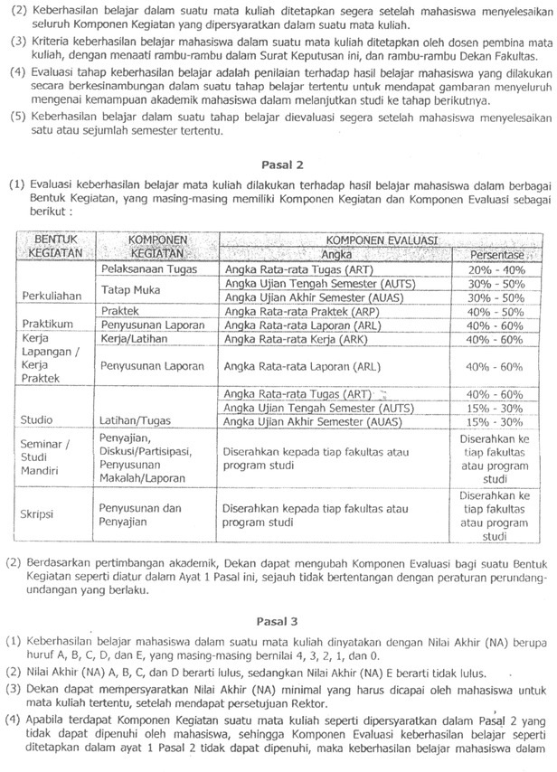 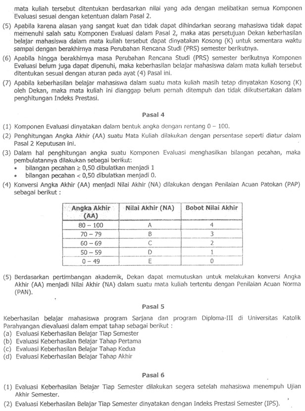
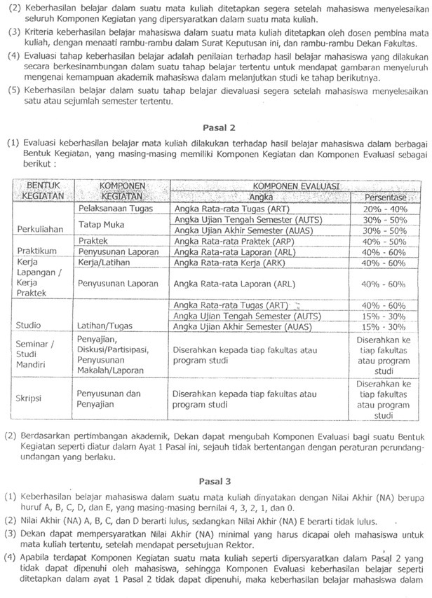 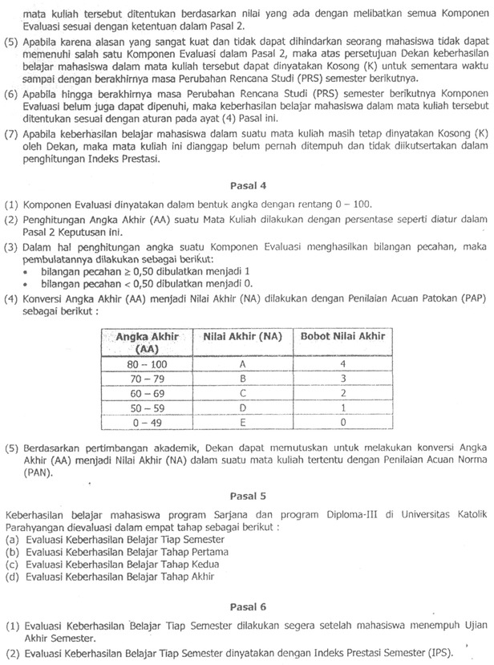  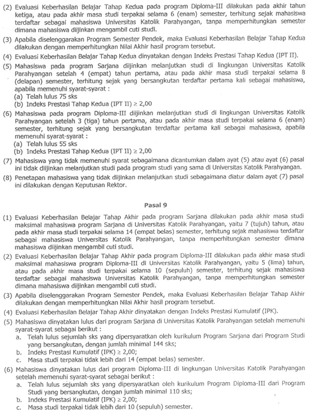
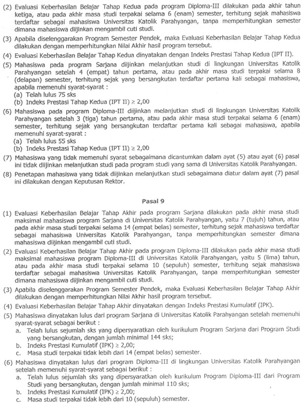 


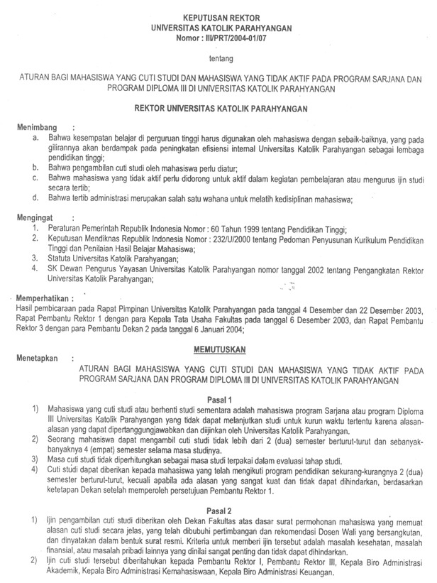 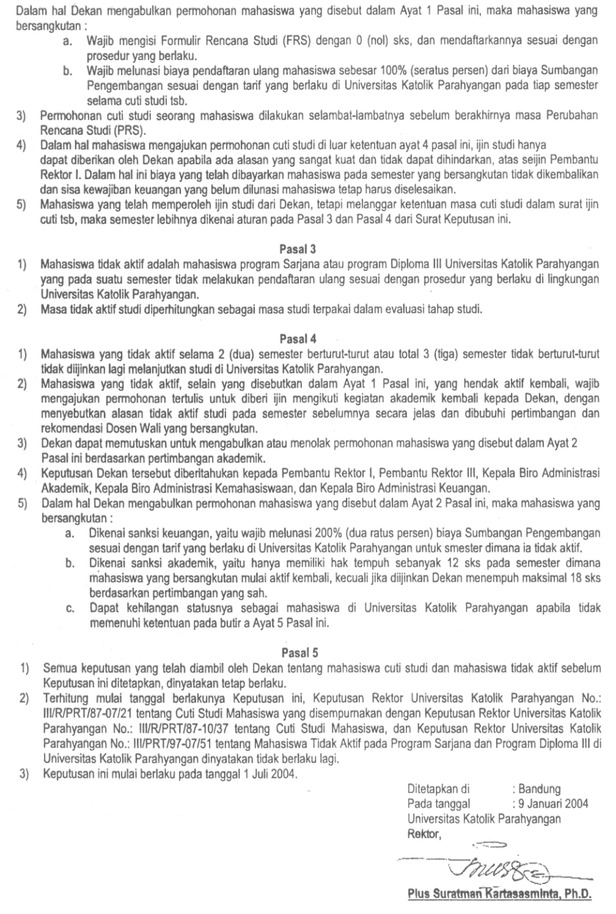

 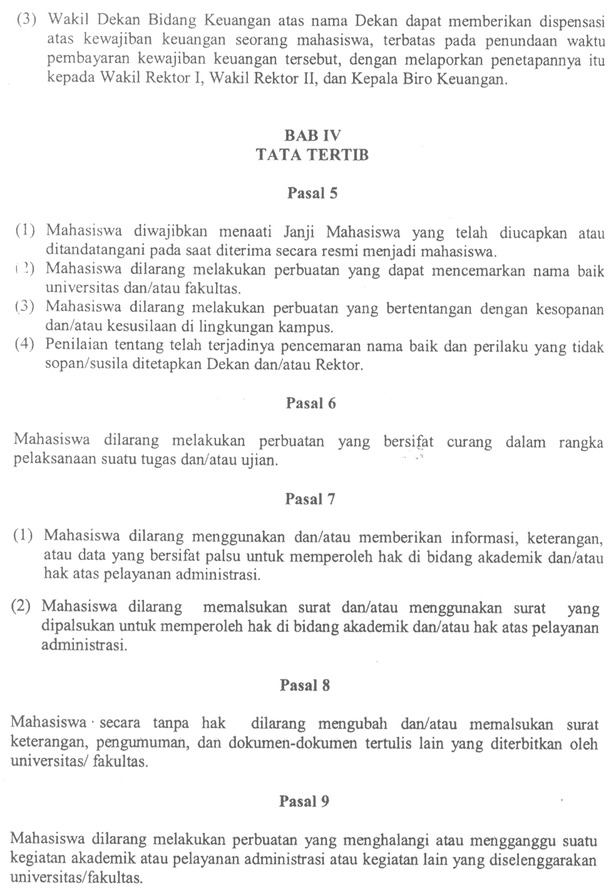 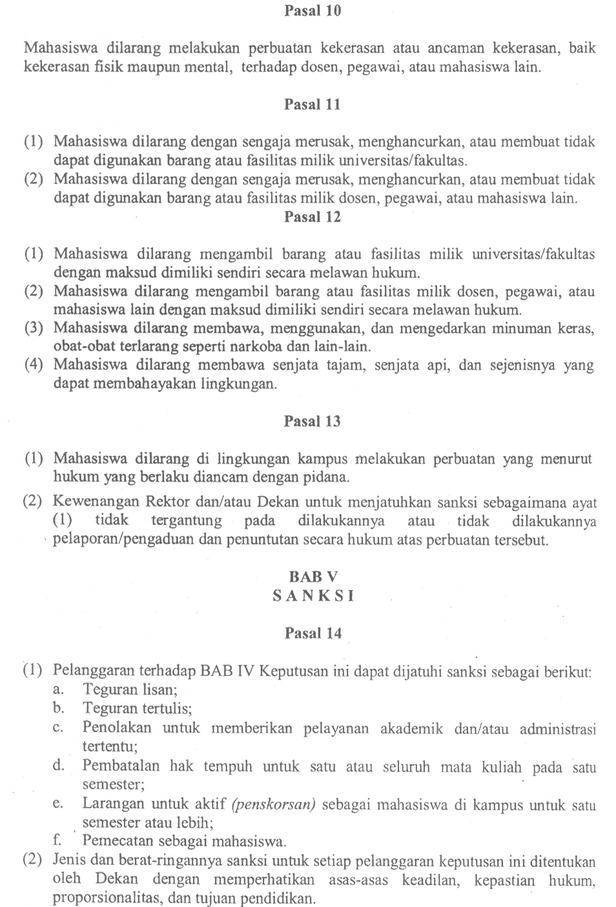
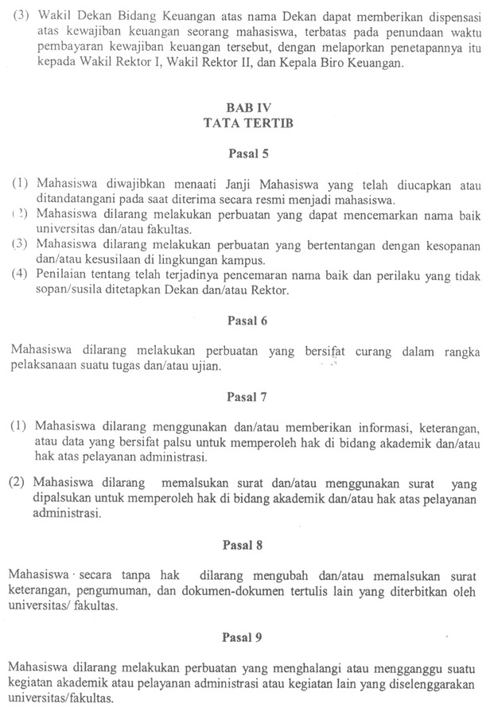 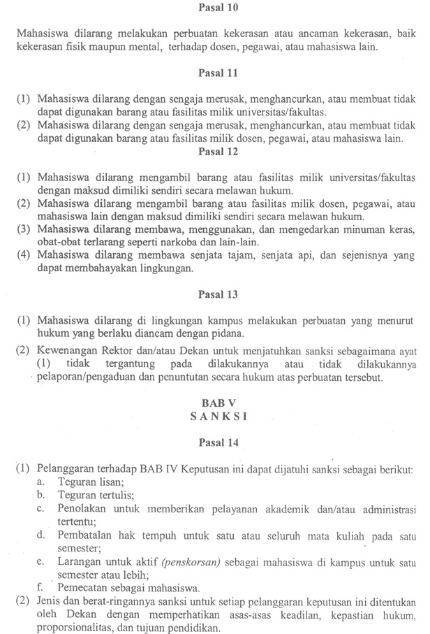  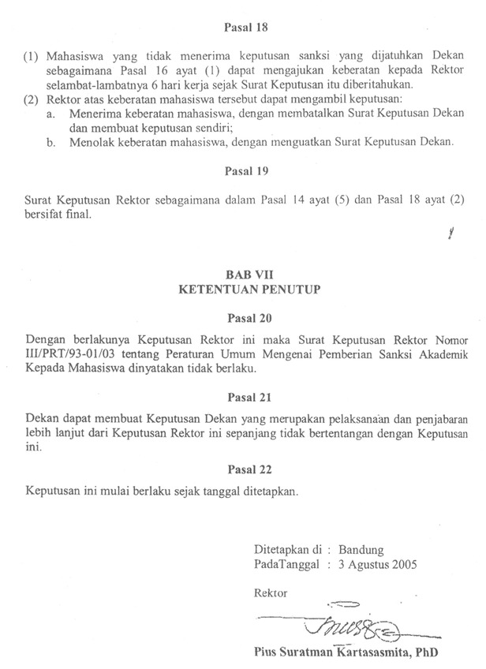
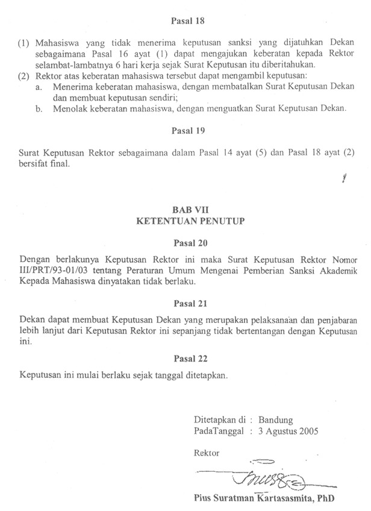